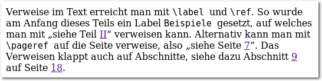
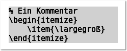
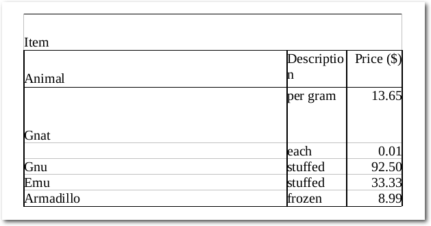

freiesMagazin Juli 2015
(ISSN 1867-7991)
Themen dieser Ausgabe sind u. a.
Debian GNU/Linux 8.0 „Jessie“Knapp zwei Jahre hat das Debian-Projekt unermüdlich gearbeitet, um den Nachfolger von Debian 7.0 „Wheezy“ fertigzustellen. Dieser Artikel stellt Debian 8.0 „Jessie“ mit einem Fokus auf die Neuheiten dieser Version vor. (weiterlesen)
Mit LaTeX zum E-Book
E-Book-Reader und mobile Geräte, auf denen man E-Books lesen kann, werden immer beliebter, nehmen sie doch weniger Platz in der Reisetasche weg als herkömmliche Bücher. Und so haben auch immer mehr Autoren, die LaTeX nutzen, Interesse daran, ihre Werke nicht nur als PDF, sondern auch in einem E-Book-Format zu veröffentlichen. Der Artikel wirft einen Blick auf die aktuellen Möglichkeiten, ein LaTeX-Dokument in ein EPUB zu konvertieren. (weiterlesen)
cut out selected fields of each line of a file
Ein klassisches Programm im Unix-Werkzeugkasten ist cut. In keinem ordentlichen Tutorial zur Shellprogrammierung fehlt es, denn es ist ein schönes, praktisches und anschauliches Helferlein. Hier soll ein wenig hinter seine Fassade geschaut werden. (weiterlesen)
Zum Inhaltsverzeichnis
Inhalt
Linux allgemein
Debian GNU/Linux 8.0 „Jessie“
Linux-Distributionen mit Langzeitunterstützung (LTS)
Der Juni im Kernelrückblick
Anleitungen
Mit LaTeX zum E-Book
Software
Neues in Octave 4.0.0
cut out selected fields of each line of a file
Community
Rezension: Git – Verteilte Versionsverwaltung für Code und Dokumente
Rezension: Let's Play Minecraft: Dein Praxis-Guide
Rezension: The Art of Unit Testing
Magazin
Editorial
Leserbriefe
Veranstaltungen
Vorschau
Konventionen
Impressum
Zum Inhaltsverzeichnis
Editorial
Wikimedia stellt auf HTTPS um
Die Wikimedia Foundation hat auf ihrem Blog angekündigt [1], in naher Zukunft alle normalen HTTP-Verbindungen durch eine mit HTTPS abgesicherte Version zu ersetzen. Bisher musste man Wikipedia-Seiten manuell über das HTTPS-Protokoll aufrufen (alle Wikipedia-Links in freiesMagazin sind beispielsweise explizit mit https:// versehen) oder Plug-ins wie HTTPS Everywhere [2] verwenden. Mit der Umstellung soll dieser Umweg entfallen. Zusätzlich soll HSTS (HTTP Strict Transport Security [3]) dafür sorgen, dass Proxys und andere dazwischengeschaltete Server nicht doch eine unsichere Verschlüsselung erzwingen können, um so z. B. die Verbindung mitlesen zu können.Spielen unter Linux
Mehr als ein Jahr ist es nun her, dass Crytek im Rahmen der GDC 2014 eine Linux-Unterstützung für seine als „CryEngine“ bekannte Spiele-Engine ankündigte [4]. Mitte Juni wurde die CryEngine in Version 3.8.1 freigegeben, die nun laut Entwickler-Blog die Linux-Unterstützung mitbringt [5], was zu einer Reihe großer Spiele-Titel für Linux führen dürfte, auf die man gespannt warten darf.Das ewige Sommerloch
Wahrscheinlich wird der ein oder andere Leser wieder auf das Thema „Sommerloch“ gewartet haben. Im Gegensatz zu den Vorjahren sind wir aber bislang noch recht gut mit Artikeln für die kommenden Ausgaben ausgestattet. Falls Sie aber in einer lauen Sommernacht einmal Langeweile bekommen sollten oder es Sie ganz einfach schon immer in den Fingern gejuckt hat, einen Artikel für freiesMagazin über Ihr Lieblingsprogramm zu schreiben, schicken Sie uns doch einfach eine E-Mail an[1] https://blog.wikimedia.org/2015/06/12/securing-wikimedia-sites-with-https/
[2] https://www.eff.org/https-everywhere
[3] https://en.wikipedia.org/wiki/HTTP_Strict_Transport_Security
[4] http://www.cryengine.com/news/cryengine-adds-linux-support-and-new-possibilities-at-gdc
[5] http://www.cryengine.com/news/update-from-the-team-cryengine-381-is-here-adding-opengl-linux-and-oculus-rift-support
[6] http://www.freiesmagazin.de/artikelwuensche
Beitrag teilen Beitrag kommentieren
Zum Inhaltsverzeichnis
Debian GNU/Linux 8.0 „Jessie“
von Hans-Joachim Baader Knapp zwei Jahre hat das Debian-Projekt unermüdlich gearbeitet, um den Nachfolger von Debian 7.0 „Wheezy“ fertigzustellen. Dieser Artikel stellt Debian 8.0 „Jessie“ mit einem Fokus auf die Neuheiten dieser Version vor. Redaktioneller Hinweis: Der Artikel „Debian GNU/Linux 8.0“ erschien erstmals bei Pro-Linux [1].Vorwort
Debian GNU/Linux bezeichnet sich als „das universelle Betriebssystem“ und ist zweifellos die größte Distribution, sowohl von der Entwickler- als auch der Anwenderzahl, die unabhängig von einem Unternehmen entwickelt wird. Debian steht auf eigenen Füßen und bildet die Basis für viele weitere Distributionen, insbesondere Ubuntu. Mehrere sehr große Installationen wie das System der Münchner Stadtverwaltung oder das der spanischen Provinz Extremadura beruhen auf Debian. Die neue Version 8.0 „Jessie“ wurde, wie bereits mehr als ein Jahr zuvor festgelegt worden war, Anfang November eingefroren. Das bedeutet, dass bis zur Veröffentlichung im April nur noch Korrekturen vorgenommen werden durften. Die Stabilisierungsphase wurde mit fünf Monaten Dauer recht zügig durchlaufen – und doch bedeutet das, dass sich Debian allein für die Stabilisierung fast soviel Zeit gönnte wie andere Distributionen für einen ganzen Entwicklungszyklus. Die lange Freeze-Phase führt dazu, dass keine in Debian vorhandene Software jünger als fünf Monate ist. Doch wie viele Pakete findet ein durchschnittlicher Benutzer veraltet und möchte sie im Laufe der zwei Jahre vor dem Erscheinen der nächsten Debian-Version aktualisieren? Vielleicht ein Dutzend, aber das hängt natürlich davon ab, was man mit dem Rechner alles macht. Um eine neuere als die angebotene Version zu bekommen, gibt es genug Möglichkeiten. Auf der Habenseite steht dagegen, dass man den Aufwand der Aktualisierung nur alle zwei Jahre einmal einplanen muss. Seit Debian nun auch verlängerten Support erhält, kann man die Distributionen Debian 6 „Squeeze“, Debian 7 „Wheezy“ und auch Debian 8 sogar fünf Jahre lang nutzen. Wie beschreibt man nun ein System, das auf diversen eigenen Rechnern, insbesondere den Desktopsystemen, bereits seit Monaten läuft? Die Antwort lautet »virtuelle Maschinen«. In diesen kann man auf einfache Weise ein unverändertes System zeigen. Für den Artikel werden daher zwei identische virtuelle Maschinen (eine für GNOME, eine für KDE), 64 Bit, unter KVM mit jeweils 2 GB RAM verwendet.GNOME-Desktop-Design von Debian 8.
Unterstützte Systeme
Anders als viele andere Distributionen beschränkt sich Debian nicht auf die x86-Architektur in ihren 32- und 64-Bit-Varianten. Die unterstützten Architekturen sind jetzt, nachdem arm64 (die 64 Bit ARM-Prozessoren) und ppc64el (64 Bit Power-Prozessoren mit Little Endian) hinzukamen und SPARC und Itanic (pardon, Itanium) herausfielen, x86 in 32 und 64 Bit, 32 Bit PowerPC, IBM S/390 (64 Bit), MIPS in Big- und Little-Endian-Konfigurationen, armel und armhf für 32 Bit ARM-Systeme. Neben den offiziellen Portierungen existieren weitere, nicht ganz aktualisierte oder noch unvollständige Portierungen wie auch Debian/kFreeBSD und Debian/Hurd. Damit unterstützt Debian fast alle Architekturen, auf denen der Linux-Kernel laufen kann. Prinzipiell bietet Debian Platz für jede Architektur, wenn sich Freiwillige dafür finden. Die Portierungen-Seite [2] listet sie alle auf.Neu in Debian 8
Eine der größten Neuerungen [3] in Debian 8 ist systemd, das als stark modernisiertes Init-System viele neue Möglichkeiten bietet. Es kann Dienste in eigenen Kontrollgruppen (cgroups) verwalten, Dienste teilweise isolieren und kürzere Systemstartzeiten erreichen. Das bekannte SysVinit sowie andere alternative Init-Systeme sind weiter verfügbar. Die in Debian 7 (siehe freiesMagazin 07/2013 [4]) vor knapp zwei Jahren eingeführte UEFI-Unterstützung wurde laut der Ankündigung ebenfalls stark überarbeitet. Dazu gehören Anpassungen an bekannte Firmware-Fehler, UEFI-Unterstützung auf 32-Bit-Systemen und Unterstützung für 64-Bit-Kernel mit 32-Bit-UEFI-Firmware (nur auf den amd64/i386-Multiarch-Installationsmedien). Die Distribution enthält jetzt über 43.000 Pakete, die aus knapp 20.100 Quellpaketen erstellt wurden. Der Standard-Desktop von Debian 8.0 ist GNOME 3.14. Zahlreiche weitere Desktopumgebungen und Window-Manager stehen zur Verfügung, darunter KDE 4.14.2, Xfce 4.10 und LXDE. Eine Auswahl der angebotenen Pakete ist Apache 2.4.10, Asterisk 11.13.1, GIMP 2.8.14, GNU Compiler Collection 4.9.2, Icedove 31.6 (eine abgewandelte Version von Mozilla Thunderbird), Iceweasel 31.6 (eine abgewandelte Version von Mozilla Firefox), LibreOffice 4.3.3, MySQL 5.5.42 oder alternativ MariaDB 10.0.16, Nagios 3.5.1, OpenJDK 7u75, Perl 5.20.2, PHP 5.6.7, PostgreSQL 9.4.1, Python 2.7.9 und 3.4.2, Samba 4.1.17, Tomcat 7.0.56 und 8.0.14, Xen 4.4.1 und X.Org 7.7. Auch im Multimedia-Bereich zeichnet sich Debian 8 durch zahlreiche Neuerungen aus. Die wohl wichtigste Multimedia-Bibliothek ist der FFmpeg-Fork libav in Version 11, die das Abspielen von HECV, einen Opus-Dekoder, Matroska 3D, Apple ProRes und einiges mehr bringt. Die neue libebur128 ist eine freie Implementation der Lautstärken-Empfehlung der European Broadcasting Union (EBU R128), die eine Alternative zu ReplayGain darstellt. Sie ermöglicht es, Audio zu analysieren und beim Abspielen die Lautstärke zu normalisieren. Weitere neue Bibliotheken sind libltc, fftease, lyonpotpourrie, iemlib, pdstring und pd-lua. Die Version 1.10.0 der LV2-Technologie (Linux Audio-Plugins) steht gemeinsam mit Entwicklungswerkzeugen wie LV2 Toolkit und Vee One Suite und Audio-Plugin-Sammlungen wie x42, zam, ste, Fomp, ab2gate, calf, eq10q, frei0r und Naspro zur Verfügung. Mplayer wurde durch Mplayer2 ersetzt. Viele neue Pakete kamen hinzu und zahlreiche weitere Pakete wurden aktualisiert. Die Java-Umgebung von Debian ist weiterhin OpenJDK 7. Java-Entwickler werden hier schmerzlich OpenJDK 8 vermissen, eine recht unverständliche Auslassung. Zwar wird OpenJDK 8 laut den Anmerkungen über jessie-backports verfügbar sein, vorerst muss man es aber manuell von den Oracle-Webseiten herunterladen, wenn man es benötigt. Der Kernel beruht in den Linux-Varianten von Debian 8 auf Linux 3.16.7. Wo es für die Unterstützung neuer Hardware nötig ist, wurden allerdings Treiber aus neueren Kernel-Versionen zurückportiert. Weitere Einzelheiten enthalten die umfangreichen Anmerkungen zur Veröffentlichung [5].Installation
Die Installation hat sich gegenüber Debian 7 nur wenig verändert. Neuer Kernel mit noch mehr Hardware-Unterstützung und verbesserte Unterstützung von UEFI sind einige der wesentlichen Änderungen. Der Installer bietet schon beim Booten viele Optionen, zum Beispiel eine textbasierte und eine grafische Installation, normale oder Experteninstallation, automatische Installation, Installation einer spezifischen Desktopumgebung und noch mehr. Die Standard-Desktop-Umgebung ist GNOME. Will man eine andere Umgebung, so kann man schon im Bootmenü des Installers unter „Alternative Desktop Environments“ KDE, Xfce oder LXDE auswählen. Und wenn einem das alles nicht passt, macht man eine Minimalinstallation und erweitert diese später.Startbildschirm des Installationsimages.
Es stehen umfangreiche Installationshandbücher [6] auf der Debian-Webseite zur Verfügung, für jede Architektur ein eigenes und jeweils in mehrere Sprachen übersetzt. Besucher der Webseite bekommen das Dokument automatisch in ihrer Sprache zu sehen, wenn ihr Browser korrekt eingestellt und die Sprache verfügbar ist. Man muss dieses Handbuch nicht komplett durchlesen, als Referenz kann man in Zweifelsfällen aber immer darauf zurückgreifen. Die empfohlene minimale RAM-Größe ist doppelt so hoch wie noch bei Debian 7. Empfohlen werden mindestens 1 GB für ein Desktopsystem, 512 MB für andere. Als Minimum gelten 256 MB für ein Desktop-System und 128 MB für ein Konsolen/Server-System. Unter Umständen kann man mit noch weniger RAM auskommen, dafür gibt es eigens einen Low-Mem-Modus des Installers. Ein Großteil der Hardware wird automatisch erkannt und Hardware-spezifische Pakete werden automatisch installiert. Neben der aktuellen Version von Debian kann man auch ältere wie Wheezy installieren. Wenn man während der Installation eine gute Netzwerkanbindung besitzt, ist das Netzwerk-Installationsimage (ca. 250 MB) eine gute Option. Nachdem das Installationsprogramm gestartet ist, wählt man zunächst die Sprache aus. Es werden nun 75 Sprachen unterstützt, eine mehr als in der Vorversion. Dann wählt man den Standort (und die Zeitzone, falls das gewählte Land mehr als eine Zeitzone hat), darauf die Tastatur. Leider wird an dieser Stelle nur eine Standard-Tastaturbelegung angeboten, eine verfeinerte Auswahl kann man erst nach der Installation vornehmen, wozu man entweder das Kommando dpkg-reconfigure keyboard-configuration oder die grafischen Werkzeuge der Desktopumgebungen nutzen kann. Nach dem Nachladen verschiedener Komponenten, das ein wenig dauern kann, will das System den Rechnernamen wissen, dann den Domainnamen. Findet das System bereits über DHCP diese Informationen heraus, dann entfallen diese beiden Schritte. Bevor DHCP möglich ist, kann es jedoch erforderlich sein, Firmware in die Netzwerk-Hardware zu laden. Freie Firmware bringt Debian bereits mit, doch es gibt auch Hardware, die unfreie Firmware benötigt. Da Debian diese nicht mehr mitliefert (außer auf den non-free-Images), ist es in solchen Fällen erforderlich, diese nachzuladen. Alles Nötige hierfür hat der Installer bereits vorgesehen. Ob WLAN- oder normale LAN-Chips, USB-Geräte oder spezielle Festplattencontroller – wenn der Installer eine benötigte Firmware nicht vorfindet, sucht er selbständig auf Disketten oder USB-Sticks danach. Wie man ein passendes Medium vorbereitet, ist im Installationshandbuch beschrieben. Oft ist die Firmware als separates Paket in der Non-Free-Sektion des Archivs verfügbar, nur in wenigen Fällen dürfte es nötig sein, die Download-Seiten des Herstellers abzugrasen. Nur muss man dies tun, bevor man die Installation beginnt. Nach der Komplettierung der Netzwerkeinrichtung ist ein Root-Passwort einzugeben, wobei Debian auch schwache Passwörter akzeptiert. Das Passwort kann auch leer gelassen werden, was zu einer Ubuntu-ähnlichen Einrichtung führt, bei der man nur mit sudo zum Root-Account wechseln kann. Darauf kann man einen separaten Benutzer anlegen. In aufeinanderfolgenden Dialogen werden der vollständige Name, der Name des Benutzerkontos und das Passwort abgefragt. Man hätte an verschiedenen Stellen mehrere dieser Dialoge zusammenlegen und die Installation damit etwas straffen können. Leider hat sich diesbezüglich gegenüber Debian 7 nichts getan, andererseits ist es kein wesentlicher Zeitverlust. Eine Installation von Ubuntu, openSUSE, Mandriva oder Fedora mag eleganter wirken, in Sachen Features und Flexibilität dürfte Debian aber kaum zu übertreffen sein. Nun kommt man zur Partitionierung, einem Punkt, der mit fünf Klicks auf „Weiter“ und einer Bestätigung erledigt werden, aber auch längere Zeit in Anspruch nehmen kann, wenn man sein System für eine langfristige und/oder komplexe Nutzung auslegt. Für letzteres wählt man „Manuelle Partitionierung“. Nun kann man völlig frei partitionieren, LVM, Software-RAID (einschließlich Fake-RAID), Verschlüsselung und Multipath in beliebigen Kombinationen einsetzen und die Dateisysteme und Mount-Punkte zuweisen. Alles lässt sich wieder rückgängig machen, außer der Einrichtung von LVM, die vor der weiteren Arbeit auf die Platte gespeichert werden muss. Dabei schließt das Programm unmögliche oder problematische Konfigurationen aus bzw. warnt vor diesen. Angebotene Dateisysteme sind ext2, ext3, ext4 (Standard), Btrfs, jfs, xfs, FAT16, FAT32, sowie qnx4 und NTFS (nur lesend). Nach der Partitionierung und Formatierung folgt die Installation des Basissystems, während derer man sich anderen Dingen widmen kann. Danach kann man weitere Software nach groben Kategorien auswählen. Standardmäßig sind „Debian desktop environment“ und „Standard-Systemwerkzeuge“ aktiviert. Falls die Pakete aus dem Internet heruntergeladen werden müssen, wird zuvor der Paketmanager konfiguriert. Auch die folgende Installation dauert eine Weile. Man hätte diese Auswahl vorziehen sollen, wodurch es nicht nötig wäre, zwischendurch an den Rechner zurückzukommen. Nach dem erfolgreichen Abschluss der Installation kann man den Bootloader installieren lassen. Standardmäßig installiert Debian GRUB 2 im Bootsektor, doch wenn man „nein“ wählt, kann man selbst ein Gerät für die Installation auswählen. Nun ist das Ende der Installation erreicht und man kann das neue System starten.
Partitionierung.
Update
Das Update einer bestehenden Debian-Installation ist möglich und dürfte meist reibungslos funktionieren. Installierte Pakete aus externen Repositorys (darunter auch debian-backports) können allerdings Probleme bereiten. Dennoch kann man zunächst das Update normal probieren; sollten Probleme auftreten, kann man die betroffenen Pakete entfernen und später eventuell in einer neueren Version wieder installieren. Ein Online-Update liefert nicht notwendigerweise dasselbe Ergebnis wie eine Neuinstallation. Der Hauptgrund dafür sind diverse Pakete, die in der neuen Version durch andere ersetzt wurden. Als Beispiel könnte man PostgreSQL 9.1 nennen, das nicht automatisch auf 9.4 aktualisiert wird. Ähnlich ist es mit Python, Ruby und anderen. Weitere Pakete listet Kapitel 4.10 der Anmerkungen zur Veröffentlichung auf. Natürlich wird ein Update nur von der direkten Vorgängerversion 7 unterstützt. Alle Einzelheiten zum Update sind in einem eigenen Kapitel der Anmerkungen zur Veröffentlichung ausführlich erläutert.Der Desktop
Debian 8.0 startet vergleichbar schnell wie andere Linux-Distributionen, wobei keine genauen Zeiten gemessen wurden. Wie gehabt werden je nach Desktopsystem unterschiedliche Display-Manager eingesetzt. Wurde GNOME installiert, dann startet Debian mit dem Display-Manager gdm, für KDE ist es kdm. Das ergibt Sinn, da diese Display-Manager für die jeweilige Desktopumgebung optimiert sind und sich am besten in dieser integrieren. Der Login-Bildschirm wurde in allen Fällen mit einem neuen Debian-Design versehen. Das neue Design ist vom Bootloader bis zum Desktop durchgängig.
Suchen in der GNOME-Shell.
GNOME ist in Version 3.14 enthalten, da GNOME 3.16 erst lange nach dem Freeze-Termin erschienen ist. Neuerungen in GNOME 3.14 sind unter anderem verbesserte Unterstützung für Touch-Gesten und Displays hoher Auflösung, ein überarbeiteter Dokumentenbetrachter, eine überarbeitete Wetter-App, die Unterstützung für Google Picture in der Fotoverwaltung Photo und eine automatische Handhabung für WiFi-Hotspots. Außerdem wurden die mitgelieferten Programme in vielen Punkten verbessert und aktualisiert. Das Theme Adwaita wurde vollständig neu geschrieben und bietet jetzt neue Menüleisten, animierte Schalter, verbesserte Benachrichtigungsdialoge und überarbeitete Spinner-Animationen. Der Gebrauch von Animationen wurde generell verstärkt. Da GNOME jetzt EGL voraussetzt und der fglrx-Treiber das nicht unterstützt, ist der proprietäre AMD-Treiber mit GNOME nicht nutzbar. Besonderheiten sind in dem Desktop-System, das rund 415 MB Speicher belegt, nicht zu entdecken. KDE hingegen, das in Version 4.14.2 enthalten ist, benötigt etwa 435 MB. Zu den standardmäßig installierten Programmen unter GNOME gehören LibreOffice 4.3.3, der Mail- und Kalender-Client Evolution, GIMP 2.8.14, Inkscape 0.48.5 und Rhythmbox 3.1. Shotwell wurde durch GNOME Fotos ersetzt, Tomboy durch GNOME Notes. Mit Tomboy konnte auch auf Mono in der Standardinstallation verzichtet werden. Das Videokonferenzprogramm Empathy ist in Version 3.12 vorhanden. GStreamer 0.10 und 1.4 sowie PulseAudio 5.0 werden standardmäßig installiert. Der Standard-Browser unter GNOME ist nun Iceweasel, die Debian-Variante von Firefox, in Version 31.6. Wichtig zu wissen ist, dass Debian nicht den üblichen Support für alle auf Gecko oder Webkit beruhenden Browser bereitstellt, da diese zu schnelllebig sind und es Distributionen zu schwer gemacht wird, Sicherheitskorrekturen zurückzuportieren. Stattdessen führt Debian regelmäßige Aktualisierungen der Browser durch und kann keine der sonst üblichen Kompatibilitätsgarantien geben. Vorinstallierte Plug-ins von Iceweasel sind die GNOME-Shell-Integration und ein iTunes Application Detector. Keine Erweiterungen sind in dieser Version vorinstalliert.
Iceweasel 31 unter GNOME.
Die GNOME-Shell kann dank Software-Rendering auf jeder Hardware laufen, auch wenn keine Hardware-3-D-Beschleunigung zur Verfügung steht. Das Software-Rendering ist einigermaßen schnell und durchaus noch benutzbar, doch wird man es wohl kaum ertragen, wenn man keinen sehr schnellen Prozessor hat. Die Situation bessert sich mit einem Mehrkern-Prozessor, doch Videos verzögerungsfrei abzuspielen, ist auf diese Weise schwer. Bei kleinen Videoformaten kann es aber noch gelingen. Das gnome-tweak-tool, auf Deutsch „Optimierungswerkzeug“ genannt, ist standardmäßig installiert, denn man benötigt es, um Erweiterungen für die GNOME-Shell zu installieren, da dafür kein Weg in der Standardkonfiguration vorhanden ist. Daneben kann man auch andere Dinge einstellen, die die GNOME-Entwickler nicht in der GUI konfigurierbar gemacht haben. Der Standard-Browser in KDE ist immer noch Konqueror. Die doppelte Natur von Konqueror als Webbrowser und Dateimanager tritt zutage, wenn man ihn über die Systemleiste startet, dann zeigt er sich nämlich als Dateimanager. Im Kickoff-Menü ist hingegen Dolphin als Dateimanager eingetragen.
Zweimal Konqueror: Webbrowser und Dateimanager.
Iceweasel ist ebenfalls installiert, die Konfiguration ist aber eine andere als unter GNOME. An Plug-ins ist nur „Skype Buttons für Kopete“ vorinstalliert. Erweiterungen sind dagegen in der Grundausstattung keine vorhanden. Neben der KDE-PIM-Suite 4.14.2 sind auch LibreOffice und GIMP vorhanden, darüber hinaus außer den zu KDE gehörenden Programmen nur wenig. Als Anwendung zum Abspielen von Medien ist VLC 2.2.0-rc2 installiert. Gegenüber dem in Debian 7 enthaltenen KDE 4.8 hat sich natürlich einiges getan, obwohl die Plattform weitgehend seit Version 4.9 und der Desktop seit 4.11 eingefroren sind. Zu nennen sind unter anderem die neue semantische Suche Baloo (seit 4.13), die weitgehende Umstellung der Plasma-Oberfläche auf Qt Quick, was hauptsächlich interne Änderungen bedeutete, aber den Benutzern auch verbesserte Widgets bringt, Optimierungen im Window-Manager KWin, Farbkorrektur mit Farbprofilen, ein Druckmanager und verstärkte Integration der Aktivitäten. Die hauptsächlichen Änderungen sind jedoch in den einzelnen Anwendungen und der PIM-Suite zu finden, die zahllose Erweiterungen und Verbesserungen erhalten haben. Debian installiert die Schriften DejaVu, die eine recht große Unicode-Abdeckung besitzt, Liberation von Red Hat, FreeFont und diverse andere. Viele weitere sind im Archiv zu finden. Dabei gab es keine größeren Änderungen gegenüber Debian 7. Abseits des Desktops bietet Debian eine sehr große Zahl von Tools, stellt sich aber auch der manuellen Änderung der Konfigurationsdateien nicht in den Weg. Debian hat teils recht aufwendige Konstrukte entwickelt, um die vom System vorgegebene und die von den Nutzern geänderte Konfiguration zu trennen und die Verwaltung so einfach wie möglich zu machen. Oft muss man erst die README-Datei lesen, um sich mit dem Debian-System vertraut zu machen. Es lohnt sich fast immer, eigene Änderungen an die Debian-Vorgaben anzupassen, da man sonst alles selbst machen muss, Sicherheitsupdates eingeschlossen. Jedes Tool und jede Konfigurationsdatei ist in einer Manpage dokumentiert, was von den Debian-Richtlinien vorgeschrieben ist. Diese Dokumentation vermisst man bei vielen anderen Distribution schmerzlich. Für die Debian-Entwickler gehören Manpages zu den Dingen, die die Qualität einer Distribution ausmachen.
Multimedia
Es mag viele Benutzer überraschen, obwohl es schon in der Vorversion so war, dass Debian Codecs für alle populären Multimediaformate mitliefert und somit ohne jede Umstände, die man in manch anderen Distributionen hat, über vollständige Multimedia-Unterstützung verfügt. Es dürfte bekannt sein, dass das einzige Problem dieser Codecs ist, dass sie von Softwarepatenten betroffen sind. Dies gilt hauptsächlich für die USA und Japan, in geringerem Maße für die EU. Debian fürchtet jedoch nicht, jemals verklagt zu werden. Anwender von Debian, die hohe Gewinne erwirtschaften, sollten jedoch genau prüfen, inwieweit sie vom Open Invention Network oder anderen Initiativen vor Patentklagen geschützt sind, denn Debian selbst kann keinen Schutz bieten. Somit laufen unter Debian MP3 und alle Videoformate ohne Zutun, auch Flash-Videos. Ein schwierigerer Punkt sind jedoch Flash-Videos auf Webseiten. Einige Seiten versagen ohne Nachrüstung des Adobe Flash Players komplett ihren Dienst. Den Player gibt es für Firefox bzw. Iceweasel zwar noch, er wird aber bis auf Korrekturen von Sicherheitslücken nicht mehr gepflegt. Das größte Problem ist jedoch, dass Mozilla den Benutzern viele lästige Hürden in den Weg legt, wenn sie das Plug-in weiter in Firefox nutzen wollen. Workarounds sind die Verwendung eines anderen proprietären Browsers wie Google Chrome oder Chromium mit dem von Google stammenden proprietären Pepperflash-Plug-in [7].Keine Probleme mit YouTube-Videos, aber für Flash-basierte Seiten ist ein Firefox-basierter Browser nicht brauchbar.
Das Debian-Multimedia-Projekt deb-multimedia.org [8] ist in vielen Fällen nicht mehr nötig. Eine Ausnahme ist das Abspielen von verschlüsselten DVDs. Die benötigte Bibliothek libdvdcss2 kann Debian nicht mitliefern, man findet sie aber beim Debian-Multimedia-Projekt oder auf der VideoLAN-Seite [9]. Debian untersucht zur Zeit, ob diese Bibliothek nicht doch offiziell mitgeliefert werden kann. Unter KDE wird zum Abspielen von Audio – jedenfalls MP3 – nicht Amarok als Standard-Player verwendet, sondern VLC. Videos werden mit Dragonplayer abgespielt. Dragonplayer ist, anders als unter Ubuntu und Fedora in der Lage, Videos korrekt abzuspielen. Möglicherweise ist Phonon unter Debian auf ein anderes Backend eingestellt als in Ubuntu und Fedora.
Paketverwaltung
Debian setzt auf PackageKit, das mit der eigenen Paketverwaltung Apt zusammenarbeitet. Unter GNOME und KDE wird mindestens einmal pro Woche automatisch geprüft, ob Software-Updates vorliegen, und das Vorhandensein von Updates angezeigt. Für die grafische Paketverwaltung steht gpk-application bereit, für die Aktualisierungen der zugehörige gpk-update-viewer. GNOME-Software, das App-Store-ähnliche Programm von GNOME, ist nicht installiert, dafür aber das gute alte Synaptic, das keine Wünsche offenlässt, in Version 0.81.2. Unter KDE wird Apper, der Nachfolger von KPackageKit, jetzt in Version 0.9.1 genutzt. Dieses Programm wurde auch von Kubuntu eingesetzt, bis es dort durch die Neuentwicklung Muon ersetzt wurde.Übersichtsseite von Apper.
Debians Paket-Updates sind erfahrungsgemäß durch das Ausbleiben von Überraschungen gekennzeichnet. Neue Programmversionen bringt Debian während des Lebenszyklus der Distribution normalerweise nicht. Es werden lediglich Sicherheitslücken und kritische Fehler korrigiert. Ausnahmen sind lediglich Programme, die von den Originalprojekten nur mangelhaft gepflegt werden, vor allem Firefox. Kleinere Fehler in Anwendungen werden von Debian grundsätzlich nicht mehr korrigiert, wenn die Distribution veröffentlicht ist. Die Benutzer müssen selbst entscheiden, wie sie darauf reagieren. Schwerwiegende Fehler werden nach Möglichkeit im Rahmen der kleinen Distributions-Updates behoben, die alle paar Monate stattfinden. Geplant ist bereits die Herausgabe von Debian 8.1, alles weitere wird sich ergeben. Die meisten Benutzer können mit dem stabilen Distributionszweig auskommen, in den man in Einzelfällen bei Bedarf Aktualisierungen einbaut, vorzugsweise über backports.debian.org, notfalls auch über Debian Testing oder Unstable. Dies minimiert den Wartungsaufwand. Andere Möglichkeiten sind das Einbinden von externen Repositorys, das Importieren von RPM-Paketen mit alien, das Kompilieren von Hand und das Bauen von eigenen Paketen. Dies ist sicher keine vollständige Aufzählung. Wer Software von Hand kompiliert, wird das Programm checkinstall wahrscheinlich nützlich finden, das die Software als minimales Debian-Paket installiert.
Fazit
In den zwei Jahren der Entwicklung erhielt Debian 8 zahlreiche Aktualisierungen, aber im Grunde nur eine echte Umwälzung, nämlich systemd. Im Nachhinein ist es verwunderlich, wenn nicht grotesk, wie eine so große Diskussion um das neue Init-System entstehen konnte. systemd betrifft Basisfunktionen des Systems, von denen die meisten Benutzer kaum je etwas mitbekommen. Administratoren müssen allerdings einige neue Befehle lernen. Auf der anderen Seite haben sich viele Programme in den letzten zwei Jahren kaum geändert oder wurden einfach stetig erweitert. So sind die Unterschiede zwischen Debian 8 und dem Vorgänger im Prinzip nicht sehr groß. Dies scheint aber ein Trend zu sein, der bei allen Distributionen in den letzten Jahren zu beobachten ist. Vielleicht ist es aber aber auch so, dass die Neuerungen in immer mehr Bestandteilen der Distributionen nicht mehr zu zählen sind und man daher sozusagen einen Schritt zurücktritt, um einen besseren Überblick zu erhalten. Dann kommen einem die Änderungen aber zwangsläufig kleiner vor. Debian bleibt weiter das „universelle Betriebssystem“, als das es sich sieht, und übertrifft alle andere Distributionen in einem oder mehreren der folgenden Punkte: Zahl der unterstützten Architekturen, Einsetzbarkeit in den verschiedensten Bereichen (Desktop, Laptop, Server, Cloud-Server, Smartphones, NAS-Geräte, etc.), Flexibilität der Installation, Lieferumfang und Dokumentation. Nicht zu vergessen sind die zahlreichen von Debian abgeleiteten Distributionen, die zum Teil mehr Nutzung erfahren als Debian selbst. Für alle diese ist Debian unverzichtbar. Links[1] http://www.pro-linux.de/artikel/2/1771/debian-gnulinux-80-jessie.html
[2] http://www.debian.org/ports/
[3] https://www.debian.org/News/2015/20150426
[4] http://www.freiesmagazin.de/freiesMagazin-2013-07
[5] http://www.debian.org/releases/jessie/releasenotes
[6] http://www.debian.org/releases/stable/installmanual
[7] https://wiki.debian.org/PepperFlashPlayer
[8] http://www.deb-multimedia.org/
[9] http://download.videolan.org/debian/
| Autoreninformation |
| Hans-Joachim Baader (Webseite) befasst sich bereits seit 1993 mit Linux. 1994 schloss er erfolgreich sein Informatikstudium ab, machte die Softwareentwicklung zum Beruf und ist einer der Betreiber von Pro-Linux.de. |
Beitrag teilen Beitrag kommentieren
Zum Inhaltsverzeichnis
Linux-Distributionen mit Langzeitunterstützung (LTS)
von Gerrit Kruse In der Diskussion zur Ankündigung eines neuen Release der Community Enterprise Distribution CentOS fragt ein Benutzer, welche Distribution die bessere Wahl für den Desktop wäre: CentOS oder Debian. Die Antwort in einem Beitrag lautet: Arch-Linux. So nachzulesen bei Heise Online. Das Ergebnis dieses netten Dialogs ist weniger, dass Arch-Linux sich wirklich gut als Langzeitdistribution eignet, sondern vielmehr, dass die unterschiedlichen Distributionsmodelle sich in den letzten Jahren weit voneinander entfernt haben. Redaktioneller Hinweis: Der Artikel „Linux-Distributionen mit Langzeitunterstützung“ erschien erstmals im Blog von [Mer]Curius [1]. So weit, dass Nutzer des einen Modells die Anforderungen der Benutzer des anderen Modells kaum noch nachvollziehen können. Waren vor wenigen Jahren noch stabile Veröffentlichungen alle paar Monate üblich, gibt es heute Distributionen mit Laufzeiten von 10 Jahren auf der eine Seite und das Rolling Release-Modell ohne offizielle Installationsroutine auf der anderen. Während im Serverbereich Distributionen mit einer Supportdauer von mehreren Jahren weit verbreitet sind und eine hohe Akzeptanz genießen, wurden solche Distributionen für den Desktop lange Zeit nicht empfohlen. Zu alt sei die Hardwareunterstützung, zu veraltet Desktopumgebung und Programme. Diese Einstellung hat sich in den letzten Jahren deutlich verändert. Im Wesentlichen gibt es zur Zeit drei Release-Modelle für Distributionen:- Der „klassische“ Release: Ein neuer Release erfolgt alle paar Monate (6-12), die Distribution wird für einen bestimmten – in Monaten gemessenen – Zeitraum unterstützt.
- Der Langzeitsupport (LTS) Release: Ein neuer Release erfolgt alle paar Jahre, die Distribution wird für einen bestimmten – in Jahren gemessenen – Zeitraum unterstützt.
- Das Rolling Release Modell: Kernel, Bibliotheken und Programme werden laufend aktualisiert. Gegebenenfalls werden Snapshots zur Installation zur Verfügung gestellt.
Langzeit-Distribution
Der Begriff Langzeitdistribution ist nicht genau definiert. In der Regel werden darunter Distributionen mit einem Supportzeitraum von mehreren Jahren verstanden. Während openSUSE mit 18 Monaten Support herkömmlicherweise nicht als Langzeitdistribution gesehen wird, ist Debian mit ca. 3 Jahren Unterstützung klassischerweise unter den Langzeitdistribution eingeordnet. Das Auswahlkriterium dieses Beitrags sind deshalb 3 Jahre Unterstützung oder länger.Debian
Debian [2] ist vielleicht „die“ Long-Term-Support Distribution schlechthin. Abgesehen vom Unstable- und Testingzweig gibt es keine anderen Veröffentlichungen des Debian Projekts. Debian veröffentlicht nach keinem festen Zeitplan, bringt aber in der Regel alle zwei Jahre eine neue Version heraus. Diese wird bis zum Erscheinen der nächsten Version unterstützt, plus weitere 12 Monate. Im vergangenen Jahr wurde zudem eine Verlängerung der Supportperiode eingeführt. Diese testweise für Debian 6.0 Squeeze eingerichtete LTS-Version wird durch interessierte Firmen finanziert und beschränkt sich auf einen limitierten Paketumfang. Sofern das Projekt erfolgreich ist werden LTS-Versionen für Debian 7.0 und 8.0 folgen.Debian Jesse mit GNOME. © Debian Project (GNU General Public License 3)
{kind=link}
Vorteile von Debian:
- Der Support erstreckt sich auf alle in den Paketen verfügbaren Programme.
- Die Paketquellen decken fast das ganze Repertoire der freien Software ab.
- Die Richtlinien sind sehr strikt. Es werden keine neuen Versionen in eine stabile Version eingepflegt.
- In regelmäßigen Abständen werden neue Installationsmedien als Unterversionen (z. B. 7.x für Wheezy) herausgegeben. Bei Neuinstallationen werden dadurch viele Aktualisierungen erspart.
- Über die offizielle Backportquelle lassen sich für viele Programme aktuellere Versionen einspielen. Diese entstammen dem aktuellen Testingzweig.
- Distributionsupgrades zwischen den Versionen sind möglich.
- Der Supportzeitraum mit lediglich ca. 3 Jahren Support ist verhältnismäßig gering.
- Neue Versionen erscheinen regelmäßig, sind aber nicht exakt planbar.
- Gegen Ende des Supportzeitraumes kann die Unterstützung für einzelne Pakete eingestellt werden. Dies wird jedoch nicht klar kommuniziert.
Ubuntu und die offiziellen Derivate
Ubuntu [4] ist die möglicherweise am weitesten verbreitete Linux-Distribution und den meisten ein Begriff. Die Entscheidung, LTS-Versionen einzuführen, traf man bereits sehr früh in der Entwicklungsgeschichte von Ubuntu mit dem Release von Dapper Drake im Jahr 2006. Ursprünglich galt der Support für den Desktop nur drei Jahre, während die Serverpakete 5 Jahre unterstützt wurden. Diese Trennung wurde mit dem Release von 12.04 aufgehoben, seitdem werden Desktop- und Serverversion 5 Jahre unterstützt. Die Community-Derivate Kubuntu, Xubuntu, Lubuntu, Ubuntu GNOME und Ubuntu MATE bringen jeweils eigene LTS-Versionen heraus. Diese haben allerdings nur eine kürzere Laufzeit von 3 Jahren, mit Ausnahme von Kubuntu, das ebenfalls 5 Jahre unterstützt wird. Alle zwei Jahre erscheint im April eine neue LTS Version, dazwischen veröffentlichen die Ubuntu-Entwickler alle 6 Monate STS Versionen, die als Vorschau für interessiere Nutzer gedacht sind.Screenshot von Ubuntu 14.04.2.
Die Ubuntu-Paketquellen sind in die Bereiche main, universe und multiverse eingeteilt. In main liegen die offiziell von Canonical (der Firma hinter Ubuntu) betreuten Pakete, in universe die von der Community gepflegten Programme. Letztere kommen teilweise während des Entwicklungsprozesses durch einen Synchronisationsvorgang aus dem Debian Testing- oder auch Unstable-Zweig. Zu den verschiedenen Paketquellen sowie den Vor- und Nachteilen dieser Aufspaltung siehe auch diesen Blogbeitrag [5]. Vorteile von Ubuntu:
- Der Support wird für 5 Jahre garantiert.
- Alle zwei Jahre erscheint planbar eine neue LTS-Version.
- In regelmäßigen Abständen werden sogenannte Pointreleases (z. B. 14.04.2) mit aktualisierter Hardwareunterstützung (Kernel und Grafikstack) veröffentlicht.
- Über die Personal-Package-Archives (PPA) können aktualisierte Softwarepakete eingespielt werden.
- Distributionsupgrades von einer LTS-Version auf die folgende sind möglich.
- Der LTS-Support wird lediglich für die Pakete in main garantiert. Die Pakete in universe können Unterstützung erhalten, dies wird aber nicht definitiv zugesichert.
- Die Unity-Oberfläche hat Vorrang. Probleme der anderen Desktopoberflächen – sei es im Releasemangement oder während der Supportzeit – werden nachrangig behandelt.
- Bei vielen eingebundenen PPAs können Upgrades zwischen den verschiedenen LTS-Versionen scheitern.
Red Hat Enterprise Linux / CentOS / Scientific Linux
RedHat Enterprise Linux (RHEL) [7] und die beiden aus dessen Quellen gebauten Community-Varianten CentOS [8] und Scientific Linux [9] stehen zur Zeit an der Spitze der LTS-Versionen – zumindest was die Supportdauer betrifft. Jede Version von RHEL und des auf Binärkompatibilität ausgelegten Ablegers CentOS durchläuft verschiedene Lebenszyklen, wird letztlich aber fast 10 Jahre mit Sicherheitsaktualisierungen versorgt.Screenshot von Red Hat Enterprise Linux.
Im Vergleich zu Debian oder Ubuntu haben RHEL und seine Ableger allerdings nur ein relativ eingeschränktes Paketangebot. Mit GNOME gibt es lediglich einen unterstützten Desktop und auch die restliche Software für den Desktopeinsatz ist stark auf Büroarbeitsplätze ausgerichtet. Zwar können die bestehenden Lücken durch externe Quellen kompensiert werden, dies läuft allerdings grundsätzlich dem LTS-Gedanken zuwider. In relativ regelmäßigen Abständen bringt RedHat eine neue Minorversion (z. B. 7.1) der Distribution heraus. Bei dieser wird zwar der – extrem stark modifizierte – Kernel stabil gehalten, aber viele Softwarepakete bis hin zu X.Org aktualisiert. Dadurch funktioniert auch neuere Hardware noch mit einer vergleichsweise alten Distribution wie z.B: RHEL 6, das ursprünglich 2010 erschien und noch bis 2020 unterstützt wird. Vorteile von RHEL und seinen Ablegern:
- Extrem langer Support von bis zu 10 Jahren.
- Regelmäßige Minor-Releases passen die Version an aktuelle Hardware an.
- RedHat pflegt die vorhandenen, nicht besonders zahlreichen, Pakete intensiv über die gesamte Lebensdauer.
- Das Softwareangebot ist sehr beschränkt.
- Die Softwareversionen sind im eigentlichen Sinne nicht stabil, da mit jedem Minorrelease viele Programmversionen angehoben werden (Kernel und Desktop ausgenommen).
- Es sind keine Distributionsupgrades zwischen den Hauptversionen (z. B. 6 nach 7) möglich.
SUSE Linux Enterprise Desktop
Der SUSE Linux Enterprise Desktop (SLED) [10] ist das Gegenstück der traditionsreichen Firma SUSE aus Nürnberg zu RedHats RHEL. Im Gegensatz zu diesem gibt es aber keinen Community-Ableger und somit auch keine kostenfreie Version. Die genaue Supportdauer variiert innerhalb der Produktfamilie etwas, beläuft sich aber ebenfalls auf ca. 10 Jahre. Vor einigen Jahren galt SUSE Linux noch als die KDE-Distribution, auch im Enterprise-Bereich. Diese Phase ist jedoch Geschichte und mit der gegenwärtigen Version 12 liefert die SUSE nur noch ein angepasstes GNOME 3 aus. Die Version wurde bisher um sog. „Service Packs“ ergänzt, wie man sie aus der Windows-Welt kannte. Mit Version 12 wurden nun „Module“ eingeführt, z. B. das Web and Scripting Module mit PHP, Python und Ruby on Rails. Die Laufzeit für diese einzelnen Module beträgt lediglich 1-3 Jahre, danach muss auf eine neue Modulversion aktualisiert werden. Dadurch ist es gerade im Serverbereich möglich, wichtige Basistechnologien aktuell zu halten, die Distribution ist im eigentlichen Sinne jedoch nicht mehr stabil, da sich die Versionen während der Lebenszeit ändern. Vorteile von SLED:- Extrem lange Supportdauer.
- YaST
- Durch Module bzw. bis Version 11 Service Packs können wichtige Pakete verhältnismäßig aktuell gehalten werden.
- Keine stabile Distribution im eigentlichen Sinne
- Undurchsichtige Supportdauer
- Keine planbaren Releasezyklen
- Kein freier Community-Ableger
openSUSE Evergreen
OpenSUSE [11] ist die freie Community-Version von SUSE, allerdings nicht binärkompatibel zum kommerziellen SLED (siehe oben). Die Distribution bildet ähnlich wie Fedora lediglich die Basis für die Enterprise Version. OpenSUSE hat traditionell recht lange Supportzeiträume für eine reguläre Distribution. Die openSUSE-Community pflegt immer den aktuellen plus den vorangegangenen Release. Bei der Veröffentlichung einer neuen Version wird die nun obsolete vorvorletzte Version noch zwei Monate gepflegt, um den Nutzern den Übergang zu ermöglichen. Durch die seit einigen Jahren immer ausgedehnteren Zeiträume zwischen zwei Versionen kommen hier beachtliche Supportzeiträume zustande. OpenSUSE 13.1 wurde z. B. im November 2013 veröffentlicht und wird bis dato gepflegt, da Version 13.3 noch nicht angekündigt ist.Screenshot von openSUSE Evergreen.
Aufgrund des fehlenden kostenlosen Ablegers der Enterprise-Distribution SLED gibt es das Community Projekt Evergreen für openSUSE, das den Supportzeitraum von openSUSE über das eigentliche Ende hinaus verlängert. Das Projekt wird maßgeblich gestützt durch Personen, die openSUSE beruflich einsetzen und in dieser Funktion abgekündigte Versionen pflegen. Durch das Projekt wird z. B. die Version 13.1 planmäßig bis 2016 unterstützt und erreicht damit dieselbe Supportdauer wie z. B. Debian. Vorteile von openSUSE Evergreen:
- Relativ umfangreiche Paketquellen
- YaST
- Paketversionen werden in der Regel stabil gehalten.
- Supportzeitraum relativ kurz.
- Genauer Umfang des Evergreen-Supports unklar.
- Distributionsupgrades nicht garantiert.
Fazit
Jede hier genannte Distribution hat Vor- und Nachteile. Welche Distribution sich am besten eignet, hängt von vielen Faktoren ab. Die gewünschte Desktopumgebung (sofern ein Desktopeinsatz angestrebt wird), das Paketformat, der Zeitraum der Unterstützung und die Anzahl mitgelieferter Pakete können hier herangezogen werden. Dieser Artikel dient einer Übersicht über die verschiedenen Möglichkeiten, weil oftmals die Enterprise-Distributionen zu Unrecht als untauglich für den Desktopeinsatz abgestempelt werden. Links[1] http://www.curius.de/blog/16-open-source/linux/34-linux-distributionen-mit-langzeitunterstuetzung-lts
[2] http://www.debian.org/
[3] https://debianforum.de/forum/
[4] http://www.ubuntu.com/
[5] http://www.curius.de/blog/16-open-source/linux/12-ubuntu-lts-nach-12-monaten-licht-und-schatten-beim-treuen-tahr
[6] http://ubuntuusers.de/
[7] http://www.redhat.com/de/technologies/linux-platforms/enterprise-linux
[8] https://www.centos.org/
[9] https://www.scientificlinux.org/
[10] https://www.suse.com/de-de/
[11] https://de.opensuse.org/Hauptseite
| Autoreninformation |
| Gerrit Kruse (Webseite) ([Mer]Curius) nutzt Linux seit 2007. Als Wissenschaftler stehen Datenschutz und produktives Arbeiten auf dem Linux-Desktop im Vordergrund seiner Interessen. |
Beitrag teilen Beitrag kommentieren
Zum Inhaltsverzeichnis
Der Juni im Kernelrückblick
von Mathias Menzer Basis aller Distributionen ist der Linux-Kernel, der fortwährend weiterentwickelt wird. Welche Geräte in einem halben Jahr unterstützt werden und welche Funktionen neu hinzukommen, erfährt man, wenn man den aktuellen Entwickler-Kernel im Auge behält.Die Entwicklung von Linux 4.1
Bereits bei der Freigabe von Linux 4.1-rc7 [1] stand fest, dass dies nicht die letzte Entwicklerversion werden würde. Zwar ging die Zahl der Änderungen abermals zurück, doch einige Probleme waren noch übrig. Unter den Änderungen waren Fehlerkorrekturen im Bereich der Werkzeuge zur Leistungsmessung und eine neue Selbsttest-Funktion für den VM86-Modus [2], ein Relikt aus frühen Tagen als Anwendungen noch Zugriff auf den ganzen Arbeitsspeicher erhielten – aus heutiger Sicht sicherlich ein sicherheitstechnischer Alptraum. Die achte und letzte Entwicklerversion [3] gab Torvalds während seines Urlaubs frei. Die Umfangreichsten Änderungen war hier die Umstellung der Parameterübergabe an die Funktion dma_buf_export(), die künftig nicht mehr mittels vieler Parameter sondern einer einzelnen Struktur erfolgt. Letztlich sind die benötigten Übergaben als einzelne Felder in dieser Struktur enthalten, jedoch wird der Code und auch die Handhabung der Funktion dadurch vereinfacht. Ebenfalls dick aufgetragen hat die Rücknahme eines Patches, der eigentlich als Vorbereitung für die Unterstützung der Verschlüsselungs- Hardwarebeschleunigung CESA (Cryptographic Engine and Security Accelerator) gedacht war. Allerdings hatte die Umsetzung auf einigen Systemen zu Problemen mit Direct Memory Access [4], einer Funktion die Geräten einen direkten Zugriff auf den Arbeitsspeicher ohne Umweg über den Prozessor ermöglicht, geführt und wurde daher vor der Veröffentlichung der finalen Version entfernt. Die wurde dann auch eine Woche später freigegeben [5]. Nur 36 Änderungen kamen zusammen, wovon das meiste auf Korrekturen an Grafik und Sound-Treibern zurückzuführen war.Der Kernel Linux 4.1
Insgesamt hat die Entwicklung von Linux 4.1 71 Tage gedauert und liegt damit etwas über dem Durchschnitt der letzten vier Jahre. Fast 13.000 Änderungen kamen dabei zusammen und brachten diesmal wieder ein paar interessante Neuerungen hervor. Einer der wichtigsten Punkte des neuen Kernels dürfte jedoch die Tatsache sein, dass er von Greg Kroah-Hartman als neuer Longterm Release Kernel ausgewählt wurde [6]. Kroah-Hartman wird die Unterstützung für Linux 3.10 im Herbst nach zwei Jahren einstellen, und stattdessen 4.2 bis 2017 mit Patches pflegen. Die populärste Neuerung dürfte die eingebaute Verschlüsselung für ext4 [7] sein. Zwar stehen schon seit längeren Möglichkeiten wie dm-crypt [8], ecryptfs [9] oder EncFS [10] zur Verfügung um Datenträger zu verschlüsseln, bei denen entweder das reguläre Dateisystem in einen verschlüsselten Container gelegt oder verschlüsselte Dateien in einem regulären Dateisystem gespeichert werden. Die Integration der Verschlüsselung direkt in das Dateisystem spart Ressourcen – es ist eine Komponente weniger an den Dateizugriffen beteiligt. Die ext4-Verschlüsselung kann mit mehreren Schlüsseln pro Dateisystem arbeiten, was die Voraussetzung für die Nutzbarkeit durch mehrere Anwender ist. Grundsätzlich wird Datei- oder Verzeichnisweise verschlüsselt, jedoch nur der Inhalt, Metadaten wie Berechtigungen, Größe und Zeitstempel liegen weiterhin in lesbarer Form vor. ACPI [11] ist auf heutigen Systemen der gängige Standard, wenn es um die Energieverwaltung und Gerätekonfiguration dar – zumindest im x86-Umfeld. Auf ARM-Seite wird Unterstützung für ACPI kontrovers betrachtet und es werden andere Ansätze zur Geräte-Erkennung und -Konfiguration bevorzugt. Die Unterstützung der ARM64-Architektur für ACPI wurde ohne viel Aufsehen zu erregen umgesetzt. Es könnte jedoch sein, dass Hardwarehersteller auf diesen Zug aufspringen und bald Server mit ARM64-Prozessoren und ACPI anbieten – angesichts der Effizienz ARM-basierter Systeme würde dies durchaus Sinn ergeben. Nichtflüchtige Speicher (Non-Volatile RAM, NVRAM) [12]), d. h. Flash-Speicher, die ihre Daten nicht verlieren, wenn sie stromlos werden, waren bereits bei Linux 4.0 ein Thema (siehe „Der April im Kernelrückblick“, freiesMagazin 05/2015 [13]). Damals wurde eine Funktion in ext2, die die sinnvolle Nutzung solcher Speicher erlaubte, durch eine überarbeitete ersetzt: DAX (Direct Access). Die aktuelle Kernel-Version bringt mit PMEM einen neuen Treiber mit, der die Unterstützung für nichtflüchtige Speicher weiter verbessern soll. PMEM ermöglicht es, NVRAM als Block-Gerät in einem reservierten Speicherbereich im Virtuellen Speicher [14] einzubinden. Dadurch lässt es sich zwar wie regulärer Arbeitsspeicher ansprechen, jedoch weiß die Speicherverwaltung, bei welchen Bereichen es sich um NVRAM handelt und kann diesen dann anders behandeln, beispielsweise durch das zwischenspeichern bei Schreiboperationen, um die vielen Schreibvorgänge pro Sekunde auf den NVRAM selbst zu reduzieren. Dadurch ließe sich die Lebensdauer der meist auf Flash-Technologie beruhenden NV-Speicher verlängern. Btrfs hat einige Korrekturen erhalten, die jedoch in erster Linie Nutzer betreffen, die damit Dateisysteme ab 20 TB Größe betreiben oder mit Dateien ab 3 TB arbeiten – beide Fälle werden vermutlich nur sehr wenige Anwender außerhalb von Unternehmen betreffen. Das Dateisystem XFS kann nun mit dem Overlay- Dateisystem UnionFS [15] zusammenarbeiten und erlaubt nun, „Löcher“, also einen leeren Bereich, in eine Datei einzufügen, der dann ggfs. später gefüllt werden kann. Netzwerkseitig unterstützt Linux nun eine neue Methode zur Generierung von Interface-Kennungen, die für die Erstellung von IPv6 [16]-Adressen benötigt werden. Diese neue Methode basiert nicht auf der MAC-Adresse [17] des jeweiligen Interfaces und stellt damit eine geringere Gefahr für die Privatsphäre des Anwenders dar. Die erzeugten „Interface Identifier“ sind innerhalb eines Subnetzes gleich, ändern sich jedoch, wenn das Netzwerk, beispielsweise das WLAN, gewechselt wird. Links[1] https://lkml.org/lkml/2015/6/7/219
[2] https://de.wikipedia.org/wiki/Virtual_8086_Mode
[3] https://lkml.org/lkml/2015/6/14/250
[4] https://de.wikipedia.org/wiki/Speicherdirektzugriff
[5] https://lkml.org/lkml/2015/6/22/8
[6] http://heise.de/-2681151
[7] https://de.wikipedia.org/wiki/ext4
[8] https://de.wikipedia.org/wiki/Dm-crypt
[9] https://de.wikipedia.org/wiki/ECryptfs
[10] https://de.wikipedia.org/wiki/EncFS
[11] https://de.wikipedia.org/wiki/Advanced_Configuration_and_Power_Interface
[12] https://de.wikipedia.org/wiki/NVRAM
[13] http://www.freiesmagazin.de/freiesMagazin-2015-05
[14] https://de.wikipedia.org/wiki/Virtuelle_Speicherverwaltung
[15] https://de.wikipedia.org/wiki/UnionFS
[16] https://de.wikipedia.org/wiki/IPv6
[17] https://de.wikipedia.org/wiki/MAC-Adresse
| Autoreninformation |
| Mathias Menzer (Webseite) behält die Entwicklung des Linux-Kernels im Blick, um über kommende Funktionen von Linux auf dem Laufenden zu bleiben und immer mit interessanten Abkürzungen und komplizierten Begriffen dienen zu können. |
Beitrag teilen Beitrag kommentieren
Zum Inhaltsverzeichnis
Mit LaTeX zum E-Book
von Dominik Wagenführ E-Book-Reader und mobile Geräte, auf denen man E-Books lesen kann, werden immer beliebter, nehmen sie doch weniger Platz in der Reisetasche weg als herkömmliche Bücher. Und so haben auch immer mehr Autoren, die LaTeX nutzen, Interesse daran, ihre Werke nicht nur als PDF, sondern auch in einem E-Book-Format zu veröffentlichen. Der Artikel wirft einen Blick auf die aktuellen Möglichkeiten, ein LaTeX-Dokument in ein EPUB zu konvertieren. Hinweis: Alle Programme und Beispiele aus dem Artikel wurden unter Ubuntu 14.04 LTS ausgeführt und getestet. Auf anderen Betriebssystemen kann es ggf. die eine oder andere Konvertiermöglichkeit nicht geben bzw. sie mag dort anders heißen. Zusätzlich kann es ggf. neuere Versionen der getesteten Programme geben, die eine größere Funktionalität besitzen.Beispieldokument
Im Gegensatz zum Artikel „E-Book-Erstellung aus LaTeX und HTML“, freiesMagazin 11/2012 [1], in dem es konkret um die Umwandlung eines Magazins in EPUB ging, soll der vorliegende Artikel sich mit herkömmlichen Studienarbeiten beschäftigen. Aufgrund dessen wurde ein Beispieldokument erstellt, welches die meistgenutzten Elemente wissenschaftlicher Arbeiten und Aufsätze enthält, wie sie im Schul- bzw. Universitätsbetrieb vorkommen. Zu den verwendeten Elementen gehören unter anderem- Titelseite
- Inhaltsverzeichnis
- Überschriften in verschiedenen Ebenen
- Textauszeichnungen und Schriftgrößen
- Aufzählungen und Auflistungen
- Interne und externe Verweise
- Tabellen und Tabellenverzeichnis
- Mathematische Formeln
- Fußnoten
- Bilder, Abbildungen und Abbildungsverzeichnis
- Zitate und Quellverzeichnis
- Index-Angabe/Glossar
- Definition von eigenen LaTeX-Kommandos und LaTeX-Umgebungen
$ latex epub_latex_beispiel
$ pdflatex epub_latex_beispiel
Den Lauf muss man gegebenenfalls wiederholen und vorher makeindex bzw. bibtex
laufen lassen, um Stichwort- und Quellverzeichnis zu generieren:
$ pdflatex epub_latex_beispiel
$ makeindex epub_latex_beispiel
$ bibtex epub_latex_beispiel
Hinweis: Der Kürze halber wird im Artikel nur der Dateiname beispiel.*
benutzt, anstatt des kompletten epub_latex_beispiel.*. Für ganz Faule
liegt dem Archiv auch ein Makefile bei, über welches man mittels
make-Aufruf das Dokument übersetzen und danach konvertieren kann.
$ bibtex epub_latex_beispiel
Besonderheiten eines E-Books
Auch wenn die meisten Leser sicherlich schon einmal ein Buch aus Papier in den Händen gehalten haben, ist man sich oft der Eigenschaften, die so ein Buch mitbringt, nicht bewusst. So gibt es feste Seiten, in der Regel mit Seitenzahlen am Rand oder in den Ecken. Rand? Genau, einen Rand um den eigentlichen Textkörper gibt es auch. So kann man das Buch mit den Händen festhalten, ohne dass der Text verdeckt wird. Oder man kann Kommentare mit einem Stift an den Seitenrand schreiben. Für ältere Menschen ist dieses feste Format aber eher schlecht. Die Schriftgröße verschiedener Bücher ist oft viel zu klein, sodass man sich externer Hilfen wie Lupen bedienen muss. Diese Eigenschaften treffen natürlich nicht nur auf gedruckte Bücher zu, sondern auch teilweise auf „starre“ digitale Formate, wie z. B. das PDF. Ein E-Book [2] dagegen ist nicht starr. Ganz im Gegenteil kann man es sogar als „fließend“ bezeichnen. Die Schriftgröße oder auch die Schriftart lassen sich oft so einstellen, dass man ohne Probleme auch bei einer Sehschwäche lesen kann. Man kann in einem E-Book zwar auch von Seite zu Seite blättern, dabei sind die Seitenzahlen aber nicht fest. Sie richten sich danach, wie groß der Text auf einer einzelnen Seite ist. Je nach Darstellungsart hat ein Buch also bei einem Leser 100 Seiten und bei einem anderen vielleicht 150. Ein weiterer Unterschied zwischen E-Books und Büchern ist die Möglichkeit der Verlinkung und der Suche. In der analogen Welt muss man sich mit einem Index zufrieden geben und hoffen, dass der Autor alle wichtigen Stellen indiziert hat. Ansonsten ist viel Blättern angesagt. Bei digitalen Formaten dagegen kann man von einem Index über Links direkt an die gewünschte Stelle im Buch springen oder auch einfach den ganzen Text in Sekundenbruchteilen durchsuchen.Warum nicht das PDF nutzen?
Auf den meisten E-Book-Readern kann man auch direkt PDFs lesen. Wieso also nicht das von LaTeX erstellte PDF-Dokument auf dem Reader lesen? Der Grund ist, dass PDF wie oben erwähnt ein starres Format ist. Das heißt, der E-Book-Reader zeigt eine ganze Seite an, die in der Regel in DIN A4 erstellt wurde. Würde man auf einem kleinen Display die ganze Seite anzeigen, könnte man nichts mehr erkennen. Wenn man also etwas lesen will, muss man in den Text zoomen und ggf. sehr oft hin- und herscrollen, was bei den meisten E-Book-Readern keinen großen Spaß macht. Insgesamt gehen mit einem PDF viele Vorteile von mobilen Formaten verloren, weswegen EPUB [3] das bevorzugte Format ist. Dieses hat sich in den letzten Jahren als dominierend erwiesen und so gut wie alle Hersteller von E-Book-Readern verstehen dieses Format. EPUB ist ein gepacktes Container-Format, in welchem man die XHTML-kodierten Dateien (wie bei gewöhnlichen Webseiten) findet, welche den Text sowie die Formatierung angeben. Daneben enthält der Container natürlich auch die anzuzeigenden Bilder sowie im EPUB3-Standard auch noch Audio- und Videoelemente. Zusätzlich kann man auch noch ein Inhaltsverzeichnis und andere Meta-Daten (wie Autoren, Herausgeber etc.) in dem Container ablegen. Da ein EPUB also intern auch nur aus HTML-Seiten besteht, drängt sich der Weg über eine HTML-Wandlung geradezu auf.Naive Wandlung des PDFs als E-Book
Wenn man das Beispieldokument in ein PDF übersetzt hat, kann man versuchen, dieses direkt in ein EPUB oder in HTML zu wandeln. Dies geht beispielsweise über$ pdftohtml beispiel.pdf beispiel.html -noframes
Das Ergebnis ist dabei aber nicht wirklich ansehnlich: Es fehlen Absätzen
und Einrückungen, Formatierungen gehen verloren und Seitenzahlen werden in
den Text gedruckt, obwohl es gar keine Seiten mehr gibt.
Die Konvertierung des PDF in HTML sieht unschön aus und viele Formatierungen gehen verloren.
Eine Alternative ist das bekannte Konvertierungsprogramm Calibre [4]. Dabei ist Calibre selbst eher ein Medienverwaltungsprogramm, welches aber zahlreiche Hilfsmittel und Skripte mitbringt. Eines davon, ebook-convert [5], beherrscht viele Wandlungen, unter anderem auch PDF nach EPUB:
$ ebook-convert beispiel.pdf beispiel.epub
Öffnet man das entstandene EPUB (zum Beispiel mit dem Calibre beiliegenden
Programm ebook-viewer oder auf dem E-Book-Reader) bietet sich ein
ähnliches Bild wie bei pdftohtml: Einrückungen und Formatierungen gehen
teilweise verloren und die PDF-Seitenzahl unterbricht den Lesefluss.
Die Wandlung des PDFs nach HTML beziehungsweise EPUB bietet sich also nicht an. Zu
viele Informationen gehen durch die PDF-Elemente verloren, die in LaTeX noch
zu finden sind. Daher ist die Idee, das LaTeX-Dokument direkt ohne Umwege zu wandeln.
EPUB-Erstellung aus HTML
Wenn man mit Hilfe der weiter unten vorgestellten Programme eine HTML-Datei aus dem LaTeX-Dokument erzeugt hat, gibt es ebenfalls verschiedene Möglichkeiten, wie man aus der HTML-Datei ein EPUB generieren kann.Calibre
Man kann dazu das bereits oben erwähnte Calibre nutzen:$ ebook-convert beispiel.html beispiel.epub --no-default-epub-cover
Die Option --no-default-epub-cover bietet sich dabei an, wenn man wie im
Beispiel eine eigene Titelseite hat und kein separates Deckblatt benötigt.
Alternativ dazu besitzt Calibre auch eine grafische Oberfläche, mit der man die
Wandlung vornehmen kann. Hierzu klickt man auf „Bücher hinzufügen“ oben
links und wählt dann die HTML-Datei aus. Danach selektiert man das neu
hinzugefügte Buch in der Titelliste in der Mitte und klickt oben auf
„Bücher konvertieren“. Voreingestellt sollte oben rechts „EPUB“ sein.
Daneben kann man noch das Titelbild, Inhaltsverzeichnis, Metadaten und
einige anderen Einstellungen verändern. Mit dem Klick auf „OK“ wird das
Buch dann konvertiert und steht anschließend auch als EPUB zur Verfügung.
Die grafische Oberfläche von Calibre.
Sigil
Ein zweites Konvertierungsprogramm ist Sigil [6]. Sigil befindet sich in sehr aktiver Entwicklung, was leider auch seine Nachteile mit sich bringt. So gab es bis zu Version 0.5.3 eine undokumentierte Schnittstelle, um das Programm von der Konsole aus auszurufen und Konvertierungen vorzunehmen. Diese Möglichkeit ist mit Version 0.6.0 weggefallen und wurde leider auch nicht wieder eingebaut [7]. Daneben ist die neueste Version von Sigil so neu (das heißt es benötigt sehr neue Bibliotheken), dass es auf einem ein Jahr alten Linux-System nicht mehr zu übersetzen ist, sodass nicht näher auf das Programm eingegangen wird. Wer will, kann es aber bei sich daheim testen.Pandoc
Pandoc [8] will nach eigener Aussage das Schweizer Armeemesser unter den Konvertierungsprogrammen sein. Es unterstützt die direkte Konvertierung von LaTeX-Dokumenten, auf die weiter unten eingegangen wird. Man kann mit Pandoc aber auch aus einer HTML-Datei ein EPUB erstellen:$ pandoc -o beispiel.epub beispiel.html
Das Ergebnis hat leider auch bei einer korrekten HTML-Datei als Eingabe die
Auswirkung, dass nicht alle Elemente übernommen werden. So werden
verschiedene Schriftgrößen gleich hoch dargestellt und Tabellen werden nicht
korrekt ins EPUB übernommen. Ebenso problematisch ist, dass ab und zu kein
valides Inhaltsverzeichnis im EPUB eingefügt wird, was aber auch mit dem
HTML-Dokument zu tun hat, sodass dieses Phänomen nur manchmal auftrat.
Aus diesen Gründen wird im Folgenden nur auf Calibre zur Konvertierung von HTML
nach EPUB eingegangen.
Besonderheit von MathML
Eine Besonderheit, über die man sich vor der Konvertierung in HTML bzw. ein EPUB Gedanken machen muss, ist die Darstellung von mathematische Formeln, wenn man diese in seinem Dokument nutzt. Für Browser steht unter anderem hierfür die Auszeichnungssprache MathML [9] zur Verfügung, die auch in Verbindung mit HTML benutzt werden kann.MathML im Browser.
Die Ausgabe von MathML ist sehr schön, hat für ein E-Book aber einen großen Nachteil: Die meisten E-Book-Reader können kein MathML interpretieren. MathML ist (noch) nicht Teil des EPUB-Standards und wird somit im Reader entweder nur schematisch dargestellt oder der Reader bricht die Darstellung komplett ab. Das Ergebnis von Konvertern, die Formeln aus LaTeX nur nach MathML exportieren können, wird zwar in HTML sehr gut aussehen, aber im EPUB nicht mehr dargestellt werden Können. Weiter unten wird sich zeigen, welches Programm eine alternative Darstellungsmöglichkeit hat.
HTML- und EPUB-Erstellung
Im Folgenden werden einige Programme vorgestellt, mit denen das LaTeX-Beispieldokument in HTML gewandelt werden kann und auf die Besonderheiten beziehungsweise etwaige Fehler eingegangen. Bei allen Programmen gilt, dass diese oft eine Fülle an Optionen mitbringen, sodass gegebenenfalls nicht die richtigen Parameter gefunden wurden, um die HTML-Ausgabe optimal zu gestalten. Dennoch merkt man an den rudimentären Aufrufen bereits, ob man mehr Zeit in die Konfiguration eines Programms stecken will oder eher nicht. Zu jedem Programm wird auf einige Besonderheiten eingegangen, was gut oder weniger gut funktioniert. Eine detaillierte Auflistung aller Ergebnisse gibt es in folgendem Dokument: EPUB-Konverter-Vergleich.ods. Dort werden die Eigenschaften aller getesteten Programme im Detail erläutert.TtH
TtH [10] ist ein „TeX to HTML translator“, der seit 1997 aktiv von Ian Hutchinson entwickelt wird. Der Quellcode des Programms liegt zwar offen vor, aber nicht unter einer freien Lizenz. Das Programm existiert für Linux, Windows und MacOS X. Die neueste Version ist 4.07 vom 12.02.2015. Die Benutzung ist recht einfach:$ ./tth -w2 -u -a -e2 beispiel.tex
Die Option -w2 ist für die Ausgabe als XHTML 4.0. Die Option -u sorgt
für Unicode-Support, wobei aber der Charset im HTML-Dokument dennoch nicht
auf UTF-8 gesetzt wird, was dazu führt, dass beispielsweise deutsche Umlaute
per Standard nicht korrekt dargestellt werden. Hier muss man im Browser erst
manuell auf Unicode umstellen. Die Option -a sorgt dafür, dass ein
LaTeX-Lauf durchgeführt wird, der die notwendigen Verzeichnisse erstellt.
Die letzte Option -e2 sorgt dafür, dass Bilder inline eingebunden werden.
Es gibt noch eine zweite Version namens
TtM [11]. Diese ist identisch zu
TtH, bis auf dass mathematische Formeln nicht als Text sondern als MathML im
HTML dargestellt werden. Da MathML aber in einem EPUB nicht angezeigt
werden kann (siehe oben), wird nicht weiter auf diese Version eingegangen.
Wandlung in HTML
TtH arbeitet mit Lex [12] und hat einen fest eingebauten Sprachschatz, der aber recht ausgeprägt ist. Dadurch werden aber \documentclass und \usepackage ignoriert und man kann keine weitere Pakete laden. Ansonsten unterstützen beide Programme vom Anwender definierte Kommandos und Umgebungen, was sehr hilfreich ist. Bei unbekannten Kommandos und Umgebungen wird der Inhalt als Reintext wiedergegeben, sodass zwar vielleicht das Layout, aber zumindest nicht die Information verloren geht. Alle Verzeichnisse werden korrekt eingebunden, erscheinen aber leider nur mit englischer Bezeichnung (das heißt „List of Figures“ anstatt „Bildverzeichnis“). Die Fußnoten werden am Ende des Dokuments angezeigt und enthalten auch einen praktischen Backlink auf die Stelle, an der sie definiert wurden. Auch alle anderen Verzeichnisse enthalten solche Backlinks. Ein Fehler lässt leider alle Links im Stichwortverzeichnis ins Leere gehen. Grafiken als JPG und PNG werden direkt eingebunden, PDF- und EPS-Grafiken werden aber nur verlinkt. Diese kann man aber vorher manuell konvertieren, wenn das gewünscht ist:$ pdftops fm-logo_pdf.pdf
$ ps2png fm-logo_pdf.ps fm-logo_pdf.png
$ epspdf fm-logo_eps.eps
$ pdftops fm-logo_eps.pdf
$ ps2png fm-logo_eps.ps fm-logo_eps.png
TtH erkennt diese zugehörigen Dateien dann automatisch und bindet die
Bitmap-Versionen anstelle des PDF- oder EPS-Links ein.
Von den Überschriften und Textauszeichnungen wird alles unterstützt, wobei
kursiv und geneigt grundsätzlich bei allen getesteten Programmen identisch
als kursiv dargestellt werden. Bei Kapitälchen gibt es Probleme mit
deutschen Umlauten, die in der Standardschrift ausgegeben werden. Auch
verschiedene Schriftgrößen werden unterstützt.
$ ps2png fm-logo_pdf.ps fm-logo_pdf.png
$ epspdf fm-logo_eps.eps
$ pdftops fm-logo_eps.pdf
$ ps2png fm-logo_eps.ps fm-logo_eps.png
Textauszeichnungen und -formatierung.
Bei der Ausrichtung von Text gibt es hier die Besonderheit, dass der gesamte Text grundsätzlich nur als linksbündiger Flattersatz ohne Einzug ausgegeben wird, was für ein HTML-Dokument aber in der Regel auch eine bessere Darstellungsmöglichkeit als Blocksatz ist. Der Grund dafür liegt darin, dass HTML-Dokumente in Blocksatz meist zu sehr großen Abständen zwischen den Wörtern neigen. Ein Manko sind bei TtH Tabellen, die leider nur sehr rudimentär dargestellt werden und nicht wirklich gut aussehen. Dies erfordert also manuelle Nachbesserung im HTML, wenn diese ordentlich aussehen sollen. Dafür wird aber auch longtable verstanden, ebenso wie \tmulticolumn oder Spaltenwiederholungen mit *{6}{c}.
Tabellen mit TtH sehen nicht sehr schön aus.
Die Verlinkung im Dokument über Label und Referenzen funktioniert korrekt. Problematisch sind Referenzen auf Seiten mit \pageref. In einem HTML-Dokument gibt es keine Seiten, sodass TtH hier als Linktext einfach das Wort „pageref“ ausgibt. \hyperref wird leider gar nicht unterstützt und der gesamte Linktext ignoriert. Für viele Anwender sind die mathematische Formeln sehr wichtig. Hier wird bis auf die align-Umgebung und \mathbb alles verstanden. TtH gibt die Formeln dabei als Reintext aus und versucht verschiedene Stilelemente für die Gestaltung zu nutzen, um Brüche, Klammern oder Integrale korrekt darzustellen. TtM dagegen nutzt wie bereits gesagt MathML, was wesentlich besser aussieht, aber in einem EPUB nicht funktioniert.
Mathematische Formeln werden mit Sonderzeichen gestaltet.
Zum Schluss werden auch Farben und Zähler unterstützt, ebenso wie Zitierungen aus dem Quellverzeichnis. Nicht verstanden werden manuelle Trennungen mit bzw. . Und aus irgendeinem Grund wird ein vertikaler Strich (Pipe) nicht dargestellt.
Wandlung in EPUB
Nutzt man Calibre bzw. ebook-convert für die Konvertierung wie oben beschrieben, wird die HTML-Seite fast eins zu eins in das EPUB übernommen, wobei noch Kleinigkeiten ausgebessert werden, sodass Umlaute korrekt im EPUB kodiert sind. Aber auch wenn mit ebook-viewer am PC alles gut im EPUB aussieht, ist die Darstellung auf einem echten E-Book-Reader ggf. anders, weswegen die erstellten EPUBs auch real auf einem PocketBook Touch 622 getestet wurden (siehe „Im Test: PocketBook Touch 622“, freiesMagazin 04/2014 [13]). Es fällt auf, dass der Sans-Serif-Text dennoch Serifen hat, weil die Schriftart Helvetica, die im HTML dafür allein definiert ist, nicht auf dem Reader installiert ist. Was schlimmer wiegt, ist die fehlerhafte Darstellung der mathematischen Formeln. Diese werden nicht korrekt angezeigt, weil für die Darstellung Unicode-Zeichen benutzt werden, die auf dem Reader aber nicht verfügbar sind.Die Unicode-Zeichen in mathematischen Formeln können nicht überall dargestellt werden.
Pandoc
Pandoc [8] wurde bereits erwähnt, als es um die Konvertierung von HTML nach EPUB ging. Da hierbei aber wichtige Textformatierungen und Elemente wie Tabellen nicht übernommen wurden, stellt sich die Frage, nach einer direkten Konvertierung von LaTeX nach HTML mit Pandoc. Pandoc von John MacFarlane ist Open Source und steht für BSD, Linux, MacOS X und Windows zur Verfügung. Die getestete Version ist 1.13.2 vom 20. Dezember 2014. Die Benutzung nach der Installation ist prinzipiell recht einfach:$ pandoc --toc -R -s -o beispiel.html beispiel.tex
Die Option --toc erstellt dabei ein Inhaltsverzeichnis, was normalerweise
fehlen würde. -s erzeugt eine Standalone-Ausgabe, sodass eine valide HTML-Seite
erzeugt wird. Zuletzt ist die Option -R wichtig, weil damit auch durch für
Pandoc unverständliche LaTeX-Kommandos gegangen wird. Seltsamerweise führt das
dennoch dazu, dass einige Elemente nicht ausgegeben werden.
Der erste Versuch scheitert aber mit der Meldung:
pandoc:
Error at "input" (line 191, column 1):
unexpected '\n'
Die folgende Aufzählung soll mit römischen Ziffern beginnen. Dies geht aber
^
Leider deutet der Fehler nicht auf das echte Problem hin. Problematisch sind
nämlich die KOMA-Beschreibungslisten mittels labeling. Kommentiert man
diese aus, gibt es aber weitere Problem mit der Definition eigener
Kommandos. So bringt bei \newenvironment die eingebettete Liste mit
itemize sowie die benutzte enumerate-Aufzählung in einem Kommando
Pandoc durcheinander und bricht den Konvertiervorgang ab. Behebt man diese
drei Stellen durch Auskommentieren, lässt sich das LaTeX-Dokument nach HTML
übersetzen.
Das Ergebnis ist leider nicht sehr befriedigend, was vor allem daran liegt,
dass Pandoc kein \newcommand* und kein \newenvironment versteht. Und
alle unbekannten Makros und Umgebungen hinterlassen mit Pandoc eine Lücke im
HTML-Text, d. h. dass keinerlei Inhalt ausgegeben wird. Das normale
\newcommand ohne Stern wird verstanden, aber es gibt bei manchen
Definitionen Probleme, wie man oben gesehen hat. Wenn man in der Datei
befehle.tex, in der die Befehle für das Beispieldokument stehen, die
Sternchen entfernt und zusätzlich die center-Umgebung bei der
Bildeinbindung auskommentiert, wird wesentlich mehr dargestellt.
Error at "input" (line 191, column 1):
unexpected '\n'
Die folgende Aufzählung soll mit römischen Ziffern beginnen. Dies geht aber
^
Wandlung in HTML
Dennoch ist das resultierende HTML-Dokument nicht sauber konvertiert. Bei den Schriftformatierungen werden \textsf und \underline komplett ignoriert. Dafür werden die Kapitälchen korrekt dargestellt. Die Familien \ttfamily und \sffamily werden ebenfalls ignoriert. Ebenfalls ungewohnt ist, dass alle Schriftgrößen nicht interpretiert werden.Serifenloser und unterstrichener Text fehlen.
Schön ist dagegen, dass neben Verbatim auch lstlisting verstanden wird. Textausrichtungen werden auch nicht erkannt, ebenso wie Verweise mit \label und \ref, was die Verlinkung und Referenzierung innerhalb eines Dokuments hinfällig macht. Auch die Unterstützung von Tabellen ist nur rudimentär vorhanden, da Tabellenlinien gar nicht gedruckt werden. \multicolumn wird ebensowenig erkannt wie die Definition mehrfacher Spalten oder eigene Definitionen. Auch longtable ist unbekannt. Die tabular-Umgebung wird erkannt, die Tabellenunterschrift steht aber über der Tabelle, was etwas ungewohnt aussieht.
Tabellen werden rudimentär unterstützt, Linien werden nicht angezeigt.
Im Gegensatz tabular wird figure zwar auch unterstützt, nur fehlt die Bildunterschrift völlig. Immerhin werden die Bilder angezeigt. PNG und JPG ist dabei kein Problem. PDF und EPS werden per embed src ins HTML eingebunden, was nur funktioniert, wenn entsprechende Plug-ins für diese Formate installiert sind. Zu den weiteren nicht unterstützen Elementen gehören Farben, Zähler und jede Art von Verzeichnis (das Inhaltsverzeichnis ausgenommen). Ohne Quellverzeichnis sind somit auch keine Quellenangaben möglich. Okay sind dagegen die Fußnoten, die auch mit Backlink am Dokumentende eingefügt werden. Zum Schluss soll noch einen Blick auf die mathematischen Formeln geworfen werden. Pandoc hat hierfür Unterstützung für MathML, jsMath, MathJax, KaTeX und mehr [14]. Leider werden diese alle nicht von EPUB unterstützt. Viel versprechend schien die Konvertierung mittels des extra Programms gladTeX [15], was aber leider bei dem Beispieldokument direkt bei der ersten Formel mit einem Fehler abbrach. Insofern bleibt nur die normale Mathe-Interpration als Reintext. Pandoc wählt hierfür eine Mischung aus der Darstellung des LaTeX-Codes und korrekter Interpretation mit Sonderzeichen. Das letztere wird dann genutzt, wenn es sich um simple Formeln mit Hoch- und Tiefstellen bzw. griechischen Buchstaben handelt. Als einzige Umgebung wird equation (diesmal auch mit Stern) korrekt verstanden.
Mathematische Formel werden in LaTeX-Syntax dargestellt.
Wandlung in EPUB
Bei der Wandlung in ein EPUB geht die Auszeichnung als Kapitälchen mit \textsc und \scshape verloren, die im HTML noch zu sehen waren. Bei den Bildern ergibt sich die logische Konsequenz, dass PDF und EPS nicht angezeigt werden, da das embed-Tag im EPUB nicht unterstützt wird. Die mathematischen Formeln werden zu einem Großteil korrekt im EPUB angezeigt, bis auf die Stellen, wo unbekannte Unicode-Zeichen benutzt werden, z. B. das „für alle“ oder „es existiert“.LaTeX2HTML
LaTeX2HTML [16] ist ein nicht mehr fortgeführtes Perl-Projekt, welches ursprünglich Nikos Drakos ins Leben gerufen wurde. Auf der genannten Webseite gibt es keine Downloadlinks mehr, aber auf CTAN erhält man die Quellen noch [17]. Die letzte offizielle Version, die die meisten Linux-Distributionen ausliefern, ist von 2008, es gibt aber auch eine 2012er-Version (1.2), welche für den Test benutzt wurde. Für die Wandlung nach HTML gibt man einfach% latex2html -split 0 -html_version 4.0,unicode -numbered_footnotes -no_navigation -lcase_tags beispiel.tex
ein, welches ein HTML-Dokument erstellt. Die Optionen bedeuten dabei:
- -split 0: Das gesamte Dokument wird als eine Seite extrahiert, was für den späteren Export als EPUB einfacher ist.
- -html_version 4.0,unicode: Nutzt den neueren HTML4-Standard inkl. Unicode-Unterstützung, sodass deutsche Umlaute und Sonderzeichen korrekt dargestellt werden.
- -numbered_footnotes: Nummeriert Fußnoten durch, statt nur einen anonymen Link auf die Fußnote zu hinterlassen.
- -no_navigation: Entfernt die Navigationsbalken am Anfang der Seite, da diese nicht notwendig sind.
- -lcase_tags: Schreibt die HTML-Tags klein. Das ist nicht zwingend notwendig, ist aber inzwischen eigentlich Usus.
Wandlung in HTML
LaTeX2HTML versteht sehr viele Befehle und kann so entsprechend viel auch nach HTML wandeln. Unbekannte Kommandos oder Umgebungen (wie z. B. labeling oder lstlisting) werden an LaTeX übergeben und aus dem Ergebnis ein Bild generiert, was dann in die HTML-Seite eingebunden wird. Das funktioniert in der Regel sehr gut, nur ist der Hintergrund solcher Wandlungen nicht immer transparent, sondern grau, was etwas seltsam aussieht. Daneben ist die Qualität der Konvertierung nicht immer die beste, sodass mitunter einige Pixel in der Grafik fehlen.Die labeling-Umgebung ist LaTeX2HTML unbekannt und wird daher als Bild eingebunden.
Von den Textauszeichnungen wird eigentlich alles verstanden, nur \textsf und \sffamily werden seltsamerweise als kursiv dargestellt. Bei Kapitälchen gibt es das gleiche Problem wie bei TtH, dass Umlaute und Sonderzeichen nicht korrekt dargestellt werden. Selbst definierte Befehle und Umgebungen stellen kein Problem dar, ebenso wie Fußnoten, die am Ende des Dokuments dargestellt werden. Referenzen im Dokument sind kein Problem, externe Referenzen funktionieren nur mit \url, aber nicht mit \href. Mathematische Formeln werden ähnlich wie unbekannte Befehle von LaTeX2HTML als Bild eingebunden, wodurch die Qualität recht gut ist (ähnlich zu MathML) und die Hoffnung besteht, dass diese auch im EPUB korrekt dargestellt werden. Einige Bilder haben seltsamerweise am unteren Rand einen schwarzen Strich, der sich nicht erklären lässt.

Formeln werden als Bilder dargestellt, haben aber manchmal einen Strich am unteren Rand.
Tabellen stellen kein großes Problem dar, einzig \tabularnewline und eigene Spaltendefinitionen versteht LateX2HTML nicht. Auch die tabular-Umgebung wird korrekt erkannt, die Caption befindet sich aber wie bei Pandoc über der Tabelle statt darunter. Die Formatierung der Tabellenlinien ist aber wie bei TtH eher praktisch als schön. Etwas problematischer ist es bei den Bildern, konkret bei den Formaten PDF und EPS, die nicht direkt in HTML eingebunden werden können. LaTeX2XML versucht diese ebenfalls zu konvertieren, kommt dabei aber irgendwo durcheinander, sodass die falschen Bilder dargestellt werden beziehungsweise irgendein Textauszug aus dem Dokument.
PNG und JPG gehen, EPS und PDF werden fehlerhaft dargestellt.
Zum Schluss funktionieren auch Zähler und Farben, ebenso wie die verschiedenen Verzeichnisse. Wer die BibTeX-Bibliography nutzen will, muss zuvor aber das Dokument einmal mit LaTeX übersetzt haben. Schade ist, dass es im Quellverzeichnis keine Backlinks auf die verwendeten Stellen im Dokument gibt.
Wandlung in EPUB
Alle Elemente werden im EPUB-Format exakt so wiedergegeben, wie sie auch im HTML-Dokument zu sehen sind, was sehr gut ist. Einzig die Bilder machen ein Problem, da sie zumindest auf dem Testgerät PocketBook Touch 622 nicht korrekt skalieren. Das führt dazu, dass die mathematischen Formeln und unbekannte LaTeX-Kommandos, die als Bilder eingebunden werden, nicht klar zu erkennen sind und stellenweise als einfach unlesbar gelten müssen, was sehr schade ist. Daneben werden die Hintergründe der Grafiken nicht transparent dargestellt, sondern hellgrau. Beide Probleme können aber mit dem Testgerät zu tun haben.Formeln sind auf dem E-Book-Reader nicht so gut lesbar.
LATEXML
L
A
T
E
X
ML [18] ist ebenfalls ein
Perl-Programm, welches vom National Institute of Standards and
Technology (NIST) entwickelt wird. Sowohl der Quellcode als auch
vorkompilierte Programme für Linux, MacOS X und Windows werden dabei
zur Verfügung gestellt. Es befindet sich zur Zeit in aktiver
Entwicklung, sodass die letzte Version 0.8.1 auch erst am 17. Februar
2015 erschienen ist. Diese hat aber leider einen Fehler, was die
Konvertierung der mathematischen Formeln in Bilder anbelangt, daher
wurde für diesen Artikel noch die vorherige Version 0.8.0 vom 5. Mai
2014 benutzt.
L
A
T
E
X
ML konvertiert, wie der Name vermuten lässt, ein LaTeX-Dokument in ein
XML-Dokument, welches danach mit einem Post-Konverter in HTML konvertiert
werden muss:
$ latexml --dest beispiel.xml beispiel.tex
$ latexmlpost --format=html4 --mathimages -dest=beispiel.html beispiel.xml
Die Option --format=html4 ist hier dafür zuständig, dass
die entstehende Seite den HTML4-Standard und noch nicht den
neueren HTML5-Standard nutzt, der gegegebenfalls nicht von allen
älteren E-Book-Readern verstanden wird. Die Option
--mathimages wandelt alle mathematische Formeln in Bilder
um anstatt diese per MathML darzustellen.
$ latexmlpost --format=html4 --mathimages -dest=beispiel.html beispiel.xml
Wandlung in HTML
L
A
T
E
X
ML versteht eine Menge an Befehlen. Die LaTeX-Makros und -Umgebungen,
die es nicht kennt, werden rot markiert ausgegeben. Das führt aber auch dazu,
dass die empfohlene Trennungen mit nicht erkannt wird und als \bbl@allowhyphens ausgegeben wird.
Ansonsten hat L
A
T
E
X
ML von allen getesteten Programmen den größten
Sprachumfang bzw. unterstützt die meisten Pakete. So stellen Tabellen mit
zeilenübergreifenden Zellen mit multirow oder farbige Tabellen mit
colortbl kein Problem dar. Die Verzeichnisse werden alle korrekt
ausgegeben und verlinkt und werden sogar automatisch erstellt. Ein Problem
stellen nur die Umlaute im Literaturverzeichnis dar.
Alle „Standardsachen“ wie Listen, Aufzählungen, Textformatierungen und
-größen werden fehlerfrei unterstützt. lstlisting wird auch
erkannt, nur der Kommentar innerhalb des Listings wird leider
verschluckt. Sehr schön ist insbesondere auch die korrekte Darstellung der Tabellen
inklusive der Tabellenlinien.
Korrekte Darstellung der Tabellenlinien.
Auch Bilder in EPS- und PDF-Format werden eigenständig nach PNG gewandelt und eingebunden. Die Farbgebung stimmt zwar nicht exakt, aber das ist zu verschmerzen. Mathematische Ausdrücke werden als Bild eingebunden, was explizit mit der Option --mathimages angegeben wurde.
Die Farbgebung der konvertierten Bilder stimmt nicht ganz (oben PNG, unten konvertiertes EPS).
Am problematischsten ist die Darstellung der Fußnoten. Hierfür hat sich
L
A
T
E
X
ML gedacht, „neue“ Browser-Features wie Popups zu nutzen. So werden
Fußnoten nicht am Seitenende angezeigt, sondern als Popup, wenn man mit der
Maus über einen Eintrag fährt. Was für eine HTML-Seite im Browser gut ist, wird
später beim EPUB Probleme bereiten.
Fußnoten werden als Popup dargestellt – selbst die Fußnote in der Fußnote ist korrekt.
Wandlung in EPUB
Das HTML wird größtenteils eins zu eins übernommen. Das ist bei den Tabellen mit einer festen Breite über p{…} ein Problem, da diese evt. über den Rand des E-Book-Readers hinausgehen. Dieses Problem ist aber auch von kommerziell erstellten EPUBs bekannt, wenn die Tabelle nicht besser umgebrochen werden kann.Tabelle mit fester Breite ragen ggf. über den Rand.
Die mathematischen Formel sehen sehr gut aus, skalieren aber leider nicht mit. Das heißt, wenn man in den Text zoomt, bleiben die Grafiken alle gleich groß. Das könnte aber mehr eine Eigenschaft des E-Book-Readers sein, wobei zumindest auf dem PC mittels ebook-viewer die Grafiken ebenfalls nicht skalieren. Auch etwas problematisch ist hier, dass einige Formeln über den Rand gehen beziehungsweise seltsam ausgerichtet sind, sodass man sie dann nicht vollständig lesen kann. Gleiches gilt auch für die anderen Bilder.
Auch im Querformat können Formeln, Tabellen und Bilder über den Rand ragen.
Wie oben bereits erwähnt können die Fußnoten als Popup gar nicht dargestellt werden und fehlen daher. Interessant ist gegebenenfalls auch noch, dass zumindest der PocketBook Touch 622 mit <tr style="background-color...;"> Probleme hat und hier nicht wie gewünscht die ganze Zeile, sondern nur die einzelnen Wörter farbig hinterlegt.
Farbige Zeilen werden nicht ganz korrekt dargestellt.
Hevea
Hevea [19] wird von Luc Maranget von Inria [20] erstellt und liegt aktuell in Version 2.23 vom 8. März 2015 vor. Hevea ist Open Source und wurde mit Objective Caml programmiert, was die Übersetzung des Quellcodes auf manchen Plattformen eventuell etwas erschwert. Auf einem aktuellen Linux-System ist das aber kein Problem, solange man Objective Caml 3.12 oder neuer installiert hat. Versucht man das Beispieldokument mit Hevea zu übersetzen, erhält man$ hevea beispiel.tex
./beispiel.tex:4: Warning: Cannot open file: scrartcl.hva
./beispiel.tex:4: Giving up command: \documentclass
./beispiel.tex:4: Error while reading LaTeX:
No base style
Adios
Hevea kann Dokumentklassen und auch Pakete nicht einfach laden, sondern
kennt nur einige ausgewählte, die als style.hva mitgeliefert werden,
wobei style einer Dokumentklasse (z. B. scrartcl) oder einem Paket
entspricht.
Man kann aber manuell die article-Dokumentklasse bei der Konvertierung
mit angeben, was dann aber etwas später mit einem Fehler abbricht:
./beispiel.tex:4: Warning: Cannot open file: scrartcl.hva
./beispiel.tex:4: Giving up command: \documentclass
./beispiel.tex:4: Error while reading LaTeX:
No base style
Adios
$ hevea article.hva beispiel.tex
...
./beispiel.tex:446: Giving up command: \end@tabular
./beispiel.tex:446: Giving up command: \endtabular
./beispiel.tex:446: Giving up command: \end
./beispiel.tex:446: Error while reading LaTeX:
This array/tabular column has no specification
Adios
Grund hierfür ist die Tabelle mit dem selbst definierten Spaltentyp
(\begin{tabular}{C{3.5cm}<{\centering}p{3.5cm} }), die auskommentiert
werden muss. Es gibt dann noch viele Warnungen, aber zumindest übersetzt
Hevea das Dokument dann.
Nachdem Hevea gelaufen ist (gegebenenfalls zweimal, damit das Inhaltsverzeichnis
korrekt erstellt wird), müssen die Bilder noch manuell extrahiert werden:
...
./beispiel.tex:446: Giving up command: \end@tabular
./beispiel.tex:446: Giving up command: \endtabular
./beispiel.tex:446: Giving up command: \end
./beispiel.tex:446: Error while reading LaTeX:
This array/tabular column has no specification
Adios
$ imagen beispiel
Das wiederum führt erneut zu einem Abbruch:
! LaTeX Error: Command \@ already defined.
Or name \end... illegal, see p.192 of the manual.
l.30 ...nd{\@KommandoMitAtZeichen}{Ich bin ein @.}
was seltsam ist, weil das Dokument selbst korrekt mit latex und
pdflatex übersetzt. Es scheint so, als würden die Befehle
\makeatletter und \makeatother nicht übersetzt werden, weswegen man
diese Passage im Beispieldokument ebenfalls auskommentieren sollte.
Danach gibt es noch ein Problem mit Ghostscript:
Or name \end... illegal, see p.192 of the manual.
l.30 ...nd{\@KommandoMitAtZeichen}{Ich bin ein @.}
Operand stack:
3 0
Execution stack:
\%interp\_exit .runexec2 -{}-nostringval-{}- -{}-nostringval-{}- -{}-nostringval-{}- 2 \%stopped\_push -{}-nostringval-{}- -{}-nostringval-{}- -{}-nostringval-{}- false 1 \%stopped\_push 1920 1 3 \%oparray\_pop 1919 1 3 \%oparray\_pop 1903 1 3 \%oparray\_pop 1787 1 3 \%oparray\_pop -{}-nostringval-{}- \%errorexec\_pop .runexec2 -{}-nostringval-{}- -{}-nostringval-{}- -{}-nostringval-{}- 2 \%stopped\_push -{}-nostringval-{}-
Dictionary stack:
-{}-dict:1180/1684(ro)(G)-{}- -{}-dict:0/20(G)-{}- -{}-dict:80/200(L)-{}- -{}-dict:188/300(L)-{}- -{}-dict:62/200(L)-{}-
Current allocation mode is local
Last OS error: No such file or directory
GPL Ghostscript 9.10: Unrecoverable error, exit code 1
Effektiv muss man alle Bilder auskommentieren bis auf das EPS, welches
korrekt von Ghostscript konvertiert werden kann. Dieses Problem ist ggf.
keines von Hevea sondern von der installierten Ghostscript-Version auf dem
Testrechner.
3 0
Execution stack:
\%interp\_exit .runexec2 -{}-nostringval-{}- -{}-nostringval-{}- -{}-nostringval-{}- 2 \%stopped\_push -{}-nostringval-{}- -{}-nostringval-{}- -{}-nostringval-{}- false 1 \%stopped\_push 1920 1 3 \%oparray\_pop 1919 1 3 \%oparray\_pop 1903 1 3 \%oparray\_pop 1787 1 3 \%oparray\_pop -{}-nostringval-{}- \%errorexec\_pop .runexec2 -{}-nostringval-{}- -{}-nostringval-{}- -{}-nostringval-{}- 2 \%stopped\_push -{}-nostringval-{}-
Dictionary stack:
-{}-dict:1180/1684(ro)(G)-{}- -{}-dict:0/20(G)-{}- -{}-dict:80/200(L)-{}- -{}-dict:188/300(L)-{}- -{}-dict:62/200(L)-{}-
Current allocation mode is local
Last OS error: No such file or directory
GPL Ghostscript 9.10: Unrecoverable error, exit code 1
Wandlung in HTML
Nachdem man das LaTeX-Dokument also angepasst hat, konvertiert Hevea dieses in eine HTML-Ausgabe. Die Standardformatierungen und Textgrößen werden verstanden, ebenso wie Verbatim und sogar lstlisting mit korrekten Rahmen.lstlisting wird korrekt interpretiert.
\noindent wird zwar verstanden, aber scheinbar befindet sich in dem Makro etwas, was Hevea nicht gefällt. Hierbei gilt, dass Hevea bei unbekannten Makros einfach nur den Inhalt anzeigt, der als Argument übergeben wurde. So führt ein \noindent zu der Ausgabe 1ex im Dokument. Verweise mit \label und \ref funktionieren, nur \pageref wird inkorrekt mit zwei Fragezeichen ausgegeben. Dafür werden auch \href und \url unterstützt. Die Tabellen werden größtenteils korrekt erkannt und sehen mit den einfachen Linien gut aus. Einzig \multirow funktioniert nicht und bei der Angaben über p{…} werden die Breitenverhältnisse nicht eingehalten.
Tabellen sehen ganz gut aus, auch wenn die Linien nicht exakt wie bei LaTeX übereinstimmen.
Mathematische Formeln kann man mit MathML darstellen, was für das E-Book wie bereits erwähnt, nicht sinnvoll ist. Deswegen wird die standardmäßig eingestellte Formatierung als Reintext bevorzugt. Es wird versucht, mit diversen Sonderzeichen eine gute Darstellung zu erreichen, was auch mehr oder weniger gelingt.
Formeln werden als Text mit Sonderzeichen dargestellt.
Eigene LaTeX-Befehle und -Umgebungen werden erkannt (bis auf das oben erwähnte Problem mit dem @ im Befehlsnamen). Bei Bildern besteht das erwähnte Problem, dass imagen nur das EPS korrekt konvertieren kann. Auch Zähler, Fußnoten und Farben funktionieren. Was nicht geht sind Literaturverweise. Die BibTeX-Bibliography wird zwar erkannt und am Ende des Dokuments als „References“ angezeigt, aber Zitate laufen ins Leere. Der Index (Stichwortverzeichnis) wird korrekt angezeigt und verlinkt, Abbildungs- und Tabellenverzeichnis fehlen dagegen komplett. Auch das Inhaltsverzeichnis besteht nur aus der Angabe der beiden Part-Angaben.
Wandlung in EPUB
Da das Inhaltsverzeichnis bereits im HTML fehlt, wird es auch im EPUB nicht korrekt angezeigt. Das heißt, das EPUB-eigene Inhaltsverzeichnis enthält zwar zu einem Teil die Abschnittsnummerierung, aber keine Abschnittstitel. Eine ordentliche Navigation ist im EPUB so nahezu unmöglich.Das EPUB-Inhaltsverzeichnis wird nicht korrekt erstellt.
Die anderen Elemente im Dokument werden wie im HTML dargestellt – bis auf die mathematischen Formeln. Im Fließtext sehen diese noch gut aus, abgesetzt werden die Bruchstriche aber enorm gestreckt, sodass nur ein kleiner Teil der Formel sichtbar ist. Auch im Querformat mit kleiner Schriftgröße ist dies nicht besser. Daneben fehlt bei den Unicode-Zeichen (hier bei den Klammern) die Darstellung, wie das auch schon bei anderen Umsetzungen mit Unicode der Fall war.
Die Beispielformel sieht im Fließtext noch gut aus, abgesetzt ist sie nicht mehr komplett lesbar.
Zum Schluss geht bei den Kapitälchen die Formatierung verloren, sodass diese als normaler Text dargestellt werden.
TeX4ht
TeX4ht [21] ist recht bekannt, die letzte Version ist von 2009, also etwas älter. TeX4ht ist eine Sammlung verschiedener Skripte und Tools. Die Installation scheint etwas komplizierter zu sein, sodass man bei einer Linux-Distribution auf die Paketverwaltung zurückgreifen sollte. Für die Konvertierung dient der einfache Aufruf$ htlatex beispiel.tex
Zuvor muss das Dokument aber mit latex übersetzt worden sein.
Beim ersten Versuch scheitert die Übersetzung, was daran liegt, dass die
KOMA-Dokumentklasse srcartcl nicht bekannt ist. Ändert man dies in
article ab, funktioniert die Konvertierung in ein HTML-Dokument.
TeX4ht versteht keine unbekannten Kommandos – was nicht schlimm ist, da das
LaTeX-Dokument dann auch nicht mit LaTeX übersetzt. Konkret nutzt
TeX4ht die gesamte TeX-Engine, um das Dokument in HTML zu übersetzen, sodass
es zu keiner fehlerhaften Darstellung kommen sollte.
Wandlung in HTML
Wie beschrieben sollte TeX4ht mit keinem Kommando ein Problem haben, da es die normale TeX-Engine nutzt. Dem ist aber nicht ganz so. Die Ausgabe ist zwar im ganzen Dokument vorbildlich und fehlerfrei, dennoch werden nicht alle LaTeX-Kommandos unterstützt. Verschiedene Textformatierungen werden unterstützt bis auf Kapitälchen. Die Ausrichtung von Text ist mit den Standardumgebungen möglich, aber bereits \centering wird nicht mehr verstanden. Auch Links innerhalb und außerhalb des Dokuments werden dargestellt. Bei \pageref fällt aber auf, dass eine – im HTML nicht existente – Seitenzahl angegeben wird. Verweis auf eine Seite, die es in HTML nicht geben kann.
Fußnoten werden ebenfalls unterstützt. Als einziger Testkandidat wird aber jede Fußnote auf einer eigenen HTML-Seite angezeigt. Ein Backlink fehlt leider, sodass im Browser nur der Zurück-Knopf bleibt. Alle Tabellen werden korrekt dargestellt, auch wenn die Linienangabe nicht immer mit dem LaTeX-Dokument übereinstimmt, was man aber ignorieren kann. Selbst \multirow wird unterstützt und korrekt umgesetzt. Bilder werden auch unterstützt, das PDF und EPS werden in ein PNG konvertiert – allerdings nicht ganz korrekt. Beim PDF wird nur ein kleiner Ausschnitt des eigentliches Bildes dargestellt. Beim EPS fehlt stattdessen ein bisschen vom rechten Rand.

PDF und EPS wurden nicht korrekt konvertiert.
Die mathematischen Formeln werden je nach Komplexität als Reintext oder als Bild eingebunden. Das führt aber auch dazu, dass Dollar- und Klammersyntax im Fließtext unterschiedlich dargestellt wird.

Identische Formeln im Fließtext haben ein anderes Aussehen.
Von den Verzeichnissen werden Inhalts-, Tabellen- und Abbildungsverzeichnis korrekt dargestellt. Der Index existiert zwar, zeigt aber leider nur eine Seitenzahl ohne Link an. Dementsprechend schwer ist es, das Stichwort dann im Text zu finden – wobei man die HTML-Seite natürlich auch normal durchsuchen kann. Das Literaturverzeichnis wird korrekt eingebunden, sodass die Verweise auf die Quellen im Text korrekt dargestellt werden. Leider gibt es keinen Backlink im Literaturverzeichnis.
Der Index verweist zwar auf Seitenzahlen, aber ohne Link.
Zum Schluss sei noch auf ein Problem mit Farben hingewiesen. Prinzipiell werden Farben akzeptiert und zum Beispiel auch mit \textcolor angewendet. Problematisch ist, dass in der erstellten CSS-Datei die zugehörigen Stil-IDs aber nicht definiert sind, wodurch das definierte Orange und das Grau als Schwarz dargestellt werden. Andere Elemente wie die Textfarbe weiß werden dagegen korrekt dargestellt.
Die farbigen Elemente haben eine textcolor, die aber in der CSS-Datei nicht definiert ist.
Wandlung in EPUB
Bei der Konvertierung der Formate geht nur die Formatierung von \slshape und \textsl auf dem E-Book-Reader verloren. Auf dem PC wird die Schrift korrekt geneigt dargestellt, sodass vermutlich eine nicht unterstützte Schriftart das Problem verursacht. Die Tabellen verlieren leider von ihrer Attraktivität, da die Tabellenrahmen mehrfach dargestellt werden, was zu einem seltsamen Aussehen führt.Die Tabellenrahmen sehen seltsam aus.
Die Bilder der mathematischen Formeln skalieren leider nicht mit und werden per Standard zu klein angezeigt, sodass man diese nur extrem schwer erkennen kann. Auch ein Zoom hilft hier nicht.
Die Formeln werden nicht gut skaliert.
Das gleiche Problem betrifft auch die Bilder, wobei diese ggf. zu groß sind und über den rechten Rand hinausragen. Immerhin eine Verbesserung gibt es: Die Fußnoten werden immer noch auf einer extra Seite dargestellt, jede Fußnote besitzt aber einen Backlink zu seinem Ursprung, sodass man schneller navigieren kann. Beim Index und Literaturverzeichnis fehlen die Links auf die Vorkommen leider immer noch. Es gibt für TeX4ht auch einen eigenen EPUB-Aufsatz namens TeX4ebook [22]. Dieser nutzt diverse Lua-Skripte und erzeugt aus der HTML-Konvertierung von TeX4ht ein EPUB. Da sich das Ergebnis aber wenig bis gar nicht von der Konvertierung mit Calibre unterscheidet, wird hier nicht gesondert darauf eingegangen.
TeX2page
TeX2page [23] wurde bei meinem Vortrag auf der DANTE-Frühjahrstagung als zusätzlicher Konverter empfohlen. Das Programm wird von Dorai Sitaram entwickelt, die letzte Version ist am 12. Januar 2015 erschienen. Der Quellcode kann auf GitHub [24] heruntergeladen werden. Die Besonderheit von TeX2page ist, dass es Scheme beziehungsweise Common Lisp für die Konvertierung einsetzt. Für die Konvertierung dient der einfache Aufruf$ tex2page beispiel.tex
wobei man in der Konfigurationsdatei verschiedene Scheme-Implementierungen
einstellen kann. Für den Test hier wurde Guile genutzt. Vor der Ausführung
muss das Dokument aber mit latex übersetzt worden sein, damit die
Verzeichnisse alle korrekt übernommen werden.
Wandlung in HTML
Der erste Versuch der Konvertierung scheitert, da TeX2page sowohl über die labeling-Umgebung als auch über equation* stolpert, obwohl die richtigen Pakete geladen wurden. Ebenso sind \mathbb und \text unbekannt. Diese Umgebungen und Befehle muss man also entsprechend auskommentieren oder ändern, damit es keine Fehlermeldungen gibt. Die erste Besonderheit ist, dass TeX2pages nicht ein einzelnes Dokument erstellt, sondern mehrere HTML-Seiten, die jeweils eine eigene Navigationsleiste besitzen. So wird automatisch an \chapter und \newpage eine neue HTML-Seite begonnen. Das ist teils unglücklich, da man im PDF ggf. eine neue Seite anfängt, wo es im HTML gar keinen Sinn ergibt. Daneben fällt unschön auf, dass in HTML übersetzter LaTeX-Code in die Titelzeile Einzug hält, sodass der Seitentitel der HTML-Seite auch span style-Befehle enthält. Die Überschriftsebenen werden alle verstanden und linken auf das Inhaltsverzeichnis zurück. Auflistungen und Aufzählungen gehen auch, nur mit der labeling-Umgebung hakt es, wie man oben schon lesen konnte. Einzelne Textformatierungen funktionieren bis auf \textsf, welches gänzlich ignoriert wird. Ebenso werden die Umlaute in den Kapitälchen wie bei anderen Konvertern nicht korrekt dargestellt. Bei dem Umschalten der gesamten Schrift-Serie oder -Familie funktioniert leider nur \itshape und \ttfamily, alle anderen wie beispielsweise \bfseries werden ignoriert. Verbatim und auch lstlisting werden verstanden, wobei interessanterweise Leerzeichen verloren gehen, die den Sinn des abgebildeten Codes zunichte machen. Die Leerzeichen zwischen \item, \large und groß fehlen und verändern den Sinn.
Die Textausrichtung funktioniert nur für \raggedright, alle anderen Ausrichtungen werden ignoriert und linksbündig dargestellt. Vergleiche dazu die Darstellung im EPUB unten. Bei den internen Verweisen gibt es das Problem, dass bei \pageref zum einen eine Seitenzahl genannt wird und der Link immer an den Anfang der Seite springt. \ref verlinkt dagegen korrekt den entsprechenden Abschnitt. Einfache Tabellen werden dargestellt – wenn auch mit recht dicken Linien. Eine spalten- oder zeilenübergreifende Darstellung ist aber leider nicht möglich, so wie auch keine eigene Spaltendefinition oder die longtable-Umgebung verstanden wird. Mathematische Formeln werden in ein GIF konvertiert, deren Auflösung aber viel zu klein geraten ist, sodass man kaum etwas erkennen kann. Wie oben geschrieben wird equation* und \mathbb nicht verstanden. Nachteilig ist auch, dass die Nummerierung der Formeln mit in das GIF kodiert wird und dabei immer neu bei 1 anfängt, was einen Verweis auf mehrere Formeln in einem Dokument unmöglich macht.
Formeln werden in einer schlechten Auflösung konvertiert und sind falsch nummeriert.
Neue Kommandos kann man mit \newcommand und \newenvironment definieren, wobei auch optionale Argumente verarbeitet werden. Was aber nicht geht, ist die Definition mit \newcommand*. Auch Kommandos mit @-Zeichen werden nicht verstanden. Ist ein Befehl unbekannt, wird zumindest der übergebene Inhalt ausgegeben. Ungewöhnlich wirkt, das TeX2page scheinbar nicht mit Bitmap-Bildern umgehen kann. Das ist ein Irrtum, denn die Bilder werden in die HTML-Seite eingebettet – aber mit einer Höhe und Breite von 0, sodass sie nicht sichtbar sind. So werden das JPG und PNG nicht angezeigt. PDF und EPS werden wie die Formeln in ein GIF konvertiert.

Nur PDF und EPS sind sichtbar.
Ebenfalls nicht unterstützt werden Zähler, Farben oder das Tabellen- und Bilderverzeichnis. Fußnoten werden korrekt am Ende der Seite mit Backlink dargestellt und auch der Index ist korrekt.
Wandlung in EPUB
Wie vermutet ist die Aufteilung in mehrere Seiten mit Navigationsleiste im EPUB unglücklich, da hierdurch redundante Umbrüche und Leerseiten entstehen. Auch das EPUB-eigene Inhaltsverzeichnis ist nicht ganz fehlerfrei und enthält teilweise unsinnige Verweise.Das EPUB-Inhaltsverzeichnis enthält unsinnige Einträge.
Durch kleine Fehler werden z. B. die Formatierung des Wortes „LaTeX“ fehlerhaft dargestellt oder bei Aufzählungen fehlen Punkte nach den Zahlen.
Das Wort „LaTeX“ wird fehlerhaft dargestellt.
Noch verwunderlicher ist, dass plötzlich die Textausrichtung im EPUB funktioniert, was im HTML nicht funktioniert hat. Und auch die PNG- und JPG-Bilder werden nun mit korrekter Größe dargestellt, selbst dann wenn diese den Text überlagern.
Bitmap-Bilder werden im EPUB nun auch dargestellt.
Alle anderen Inhalte werden genauso wie im HTML dargestellt, was unter anderem auch bedeutet dass die Matheformeln nicht mehr zu erkennen sind.
Auch im EPUB sind die Matheformeln nicht zu erkennen.
latex2rtf
latex2rtf [25] wurde von Christine Römer in der TeXnischen Komödie 1/2015 vorgestellt und hat einen anderen Ansatz. Das Open-Source-Programm konvertiert das LaTeX-Dokument nicht nach HTML sondern nach RTF, welches dann beispielsweise mit LibreOffice, OpenOffice oder MS Office angeschaut werden kann. Mittels Calibre lässt sich das RTF aber auch in ein EPUB wandeln. Die aktuellste Version von latex2rtf ist 2.3.8 vom 16. Juni 2014. Die allgemeine Benutzung ist sehr einfach:$ ./latex2rtf -P ../Programme/latex2rtf-2.3.8/cfg/ -M12 beispiel.tex
Die Angabe von -P ../Programme/latex2rtf-2.3.8/cfg/ ist dabei notwendig
gewesen, weil das Programm nicht systemweit installiert wurde und die
Config-Dateien sonst nicht gefunden werden. Die Option -M12 wandelt alle
mathematischen Formeln in Bilder um, sodass diese später auch im EPUB
dargestellt werden können.
Neben zahlreichen Warnungen für unbekannte Befehle bricht die Konvertierung mit
beispiel.tex:350 '*{num}{cols}' not supported.make: *** [latexrtf] Speicherzugriffsfehler (Speicherauszug erstellt)
ab. Grund ist, dass die Spaltenwiederholung mittels *{6}{c} in der
Tabelle nicht verstanden wird. Die Tabelle wurde daher auskommentiert.
Damit die BibTeX-Bibliography korrekt erkannt wird, muss diese zuvor manuell
erstellt werden.
Wandlung in RTF
Wenn man durch das erstellte RTF-Dokument blättert, fällt zuerst auf, dass kein Inhaltsverzeichnis erstellt wird. Weiter fällt auf, dass alle Makros, die mit \newcommand* definiert wurden, nicht formatiert sind. Die Parameter der Makros werden zwar ausgegeben, aber der weitere Text fehlt. Aus dem Grund wurde die befehle.tex entsprechend angepasst. Unbekannte Umgebungen werden mit einem „Sorry. Ignored \begin{…} … \end{…}“ im Dokument ausgewiesen. Der Inhalt der Umgebung wird dann nicht ausgegeben.Unbekannte Umgebungen werden mit einem „Sorry.“ ignoriert.
Ein weiteres Problem bei der Konvertierung entsteht, wenn hinter einer Überschrift eine \index-Angabe folgt. Dann wird der nachfolgende Absatz noch als Überschrift ausgewiesen, was seltsam aussieht.
Fehlerhafte Auszeichnung von ganzen Abschnitten als Überschrift.
Textformatierung und Schriftgrößen werden alle korrekt dargestellt. Auflistungen und Aufzählungen werden korrekt dargestellt, wobei bei Auflistungen nur Punkte für alle Ebenen benutzt werden. Tabellen werden auch dargestellt, auch wenn die Spaltenbreite mitunter nicht optimal gewählt wird. Bei \multicolumn wird die Spaltendefinition ignoriert und auch die Definition eigener Spalten funktioniert nicht. 
Tabellen werden dargestellt, aber unglücklich breit formatiert.
Die mathematischen Formeln werden durch die Option -M12 als Bilder dargestellt, die Qualität ist aber nicht sehr gut. Die Linien sind sehr fein, sodass im Dokument bei „falscher“ Zoomstufe ein Minus nicht mehr sichtbar ist.
Formeln sind sehr fein gezeichnet und haben dadurch eine schlechte Qualität.
Die Grafiken werden korrekt eingebunden, auch das PDF und EPS werden in ein RTF-verständliches Format konvertiert. Probleme mit der Größendarstellung gibt es bei JPG-Bildern, die sehr klein abgebildet werden.
JPG-Bilder werden sehr klein dargestellt. Andere Formate sind größer.
Fußnoten werden dargestellt, landen aber im Gegensatz zu den HTML-Konvertierungen am Ende der jeweiligen Seite. Literaturverweise sind ebenfalls möglich und auch das Literaturverzeichnis wird korrekt eingefügt. Das Tabellen- und Abbildungsverzeichnis bleibt wie das Inhaltsverzeichnis leider leer. Ebenso werden Farben und Zähler nicht unterstützt. Zum Schluss fällt etwas Seltsames auf: Viele Abschnitte sind zentriert dargestellt, obwohl sie nicht besonders im LaTeX-Code ausgerichtet sind. Hier scheint irgendeine Formatierung in der Datei eine Auswirkung auf das ganze Dokument zu haben.
Wandlung in EPUB
Analog zur Wandlung von HTML nach EPUB kann man auch das RTF mit Calibre nach EPUB wandeln. Auf der Konsole mit$ ebook-convert beispiel.rtf beispiel.epub --no-default-epub-cover
Da LaTeX2RTF das einzige Programm ist, was nicht über HTML geht, können die
folgenden Probleme ggf. auch daran liegen, dass der Calibre-Konverter für
RTF nicht so ausgereift ist wie für HTML.
Das erste große Problem mit dem EPUB ist das fehlende Inhaltsverzeichnis. Das
heißt, nicht nur wird am Anfang keines ausgegeben, sondern das gesamte EPUB hat von
Calibre keines erhalten. Somit kann man in einem großen Dokument ausschließlich
willkürlich zu bestimmten Seiten springen.
Bei den Textformatierungen geht leider sehr viel verloren, sodass
sowohl Sans-Serif als auch Monotype und Kapitälchen nicht angezeigt
werden, was im RTF noch funktionierte. Dies könnte allerdings auch an
den gewählten Schriftarten Arial und Courier liegen, die auf dem
Testgerät nicht installiert sind.
Die internen Verweise im Dokument, die im RTF noch zu sehen waren, fehlen
nun völlig, sodass man im EPUB nicht mehr navigieren kann. Auch die Fußnoten
gehen komplett verloren.
Die meisten Tabellen sehen in Ordnung aus, einige werden aber komplett
fehlerhaft dargestellt, sodass man den Sinn der Tabelle nicht mehr erkennen
kann.
Die mathematischen Formeln sehen als Grafiken zwar gut aus, skalieren
auf dem E-Book-Reader aber leider nicht, sodass sie über den Rand
laufen und somit dann nicht mehr komplett zu erkennen sind.
Tabellen sind teilweise gar nicht mehr als solche erkenntlich.

Die Formeln und andere Bilder skalieren nicht korrekt.
Weitere (durchgefallene) Kandidaten
Für die Konvertierung von LaTeX nach HTML gibt es noch weitere Programme, die mitunter im Netz auch von Nutzern empfohlen werden und daher prinzipiell irgendwie funktionieren. Bei den Tests mit dem Beispieldokument oben versagten diese Tools allerdings alle, weshalb sie nicht ausführlich behandelt wurden. Hyperlatex [26] ist bereits seit neun Jahren nicht mehr in der Entwicklung, die letzte Version ist 2006 erschienen. Versucht man das Beispieldokument zu konvertieren, erhält man zahlreiche Fehler. Leider bricht das Ergebnis immer beim ersten unbekannten LaTeX-Befehl ab, sodass man diese alle einzeln durchgehen muss. Problematisch sind dabei auch schon simple Dinge wie \textbackslash, \includegraphics und selbst der \section-Befehl wirft einen Fehler. Es wurde zwar versucht, die einzelnen Elemente auszukommentieren bzw. zu ersetzen, aber im Endeffekt bleib vom Originaldokument kaum noch etwas übrig und es war sehr viel Handarbeit notwendig, überhaupt zu einem konvertierten Ergebnis zu kommen. LaTeX4Web [27] nutzt JavaScript, um aus LaTeX-Code ein HTML-Dokument zu machen. Auf der Webseite findet man die recht neue Version 1.4 von Januar 2015. In das Eingabefenster kann man den Code des Beispieldokuments einfügen und erhält darunter dann das Ergebnis in HTML, welches man direkt im Browser anschauen kann. Der Sprachschatz von LaTeX4Web ist allerdings sehr stark eingeschränkt. So wird \section zwar verstanden, \paragraph oder \part jedoch schon nicht mehr. Auflistungen und Aufzählungen sind okay, Beschreibungslisten nicht. Von den Textformatierungen wird nur \em verstanden und die älteren \bf und \it, mehr nicht. An Schriftgrößen ist nur small bis large und noch huge zulässig. Tabellen, Grafiken, Zähler, Literaturangaben … alles das ist nicht möglich, weswegen der Konverter für einen sinnvollen Test nicht benutzt werden kann. Ebenfalls von Ende Januar ist die letzte Version 2.15.2 von Tralics [28]. Das Programm erstellt aus dem Beispieldokument ein XML und ich habe leider kein Beispiel gefunden, wie ich aus der erstellten Tralics-XML-Datei eine HTML-Datei erstellen kann.Fazit der Konvertierung
Wie man sieht, gibt es keinen Konverter, der aus der LaTeX-Eingabedatei ein perfektes und einwandfreies HTML-Dokument macht, sodass auch das Ergebnis im EPUB nicht identisch zum LaTeX-Dokument ist. Jeder Konverter hat seine Vor- und Nachteile. Die besten Ergebnisse erzielen sicherlich TeX4ht undL
A
T
E
X
ML,
aber auch diese erfordern eine gewisse Menge an Handarbeit, wenn man
ein EPUB erzeugen will, was man gut lesen und benutzen kann. Oft sind
Anpassungen im HTML-Code notwendig, bevor man die Konvertierung nach
EPUB vornimmt, manchmal muss man aber auch den LaTeX-Code selbst
anpassen, bevor man die Konvertierung nach HTML vornimmt. Beides kann
gegebenenfalls skriptgesteuert erfolgen, sodass man nach dem Schreiben des
LaTeX-Dokuments nur noch einen Befehl ausführen muss, der einem
die händische Anpassung der Dateien und Wandlung nach HTML beziehungsweise EPUB
abnimmt.
Beispiel einer Mobilanpassung
Je nach Konverter muss man entweder nicht verstandene LaTeX-Kommandos definieren oder fehlerhaft konvertierte Kommandos in der Mobilversion umschreiben beziehungsweise schlichtweg nicht nutzen. Für die EPUB-Version kann man hierfür zusätzlich folgende Zeile in der Präambel einfügen:\input{epub_latex_befehle_mobil}
Diese neue Datei epub_latex_befehle_mobil.tex wird nur einbezogen, wenn
man das Dokument in ein EPUB konvertieren will.
Hinweis: Das folgende Beispiel wurde ausschließlich mit L
A
T
E
X
ML geprüft. Es kann sein, dass
andere Konverter gegebenenfalls noch andere Anpassungen benötigen um das Dokument übersetzen zu können.
Als einfaches Beispiel kann man hier die labeling-Umgebung nehmen, die leider von so
gut wie keinem Konverter verstanden wird. Hierfür fügt man in die mobile
Befehlsdatei die folgende Zeile ein:
\newenvironment{labeling}[2][]{%
\begin{description}%
}{%
\end{description}%
}
Dies macht aus der labeling-Umgebung eine description. Dies ist zwar
nicht das Gleiche, für das EPUB sieht dies aber definitiv besser aus als eine komplett
fehlerhafte Generierung.
Da nun aber das optionale Trennzeichen (im Beispiel ein Doppelpunkt) fehlt,
kann man auch dieses nachbilden. Hierfür muss man aber das
Trennzeichen hinter den Beschreibungspunkten angeben, wofür ein eigener
Befehl \labelingitem in epub_latex_befehle_mobil.tex definiert wird:
\begin{description}%
}{%
\end{description}%
}
\newcommand{\labelingitem}[1][]{%
\item[#1]:
}
Wenn man das \newenvironment zu \renewenvironment ändert, kann man das
aktuelle Dokument dann sogar mit LaTeX direkt übersetzen.
Der Quellcode im vorliegenden Beispieldokument epub_latex_beispiel.tex muss dazu lediglich
wie folgt angepasst werden:
\item[#1]:
}
\begin{labeling}[:]{Einrückung}%
\labelingitem[Erde] Mostly harmless.
\labelingitem[Menschen] (Homo sapiens) …
\labelingitem[Donald E. Knuth] (* 10. Januar 1938 …
\end{labeling}%
Per Standard wird jetzt aber immer ein Doppelpunkt als Trennzeichen
benutzt, was natürlich einschränkend für andere Verwendungen der
labeling-Umgebung ist, weswegen die Angabe des Trennzeichens
bis zu den einzelnen Beschreibungspunkten „gerettet“ werden
soll. Hierzu wird die epub_latex_befehle_mobil.tex wie
folgt geändert:
\labelingitem[Erde] Mostly harmless.
\labelingitem[Menschen] (Homo sapiens) …
\labelingitem[Donald E. Knuth] (* 10. Januar 1938 …
\end{labeling}%
\newcommand*{\labelingdelimiter}{}
\newenvironment{labeling}[2][]{%
\renewcommand*{\labelingdelimiter}{#1}
\begin{description}%
}{%
\end{description}%
}
\newcommand{\labelingitem}[1][]{%
\item[#1]\labelingdelimiter{}
}
Effektiv speichert man das optionale Trennzeichen nur in einem Makro
\labelingdelimiter und gibt dieses dann einfach bei den
Punkten mit aus.
Zum Schluss fehlt noch ein Detail. Wenn man für die PDF-Ausgabe die
Mobilzeile entfernt oder auskommentiert, übersetzt das Dokument mit LaTeX
nicht mehr, weil die Definition des Befehls \labelingitem fehlt. Hierzu
definiert man in der normalen Befehle-Datei epub_latex_befehle.tex den
fehlenden Befehl:
\newenvironment{labeling}[2][]{%
\renewcommand*{\labelingdelimiter}{#1}
\begin{description}%
}{%
\end{description}%
}
\newcommand{\labelingitem}[1][]{%
\item[#1]\labelingdelimiter{}
}
\newcommand{\labelingitem}[1][]{\item[#1]}
Man muss dann in der epub_latex_befehle_mobil.tex das \labelingitem
mit \renewcommand umdefinieren.
Abschlussbemerkung
Der Artikel hat verschiedene Konverter gezeigt, um von einer LaTeX-Datei (meist über HTML) zu einem EPUB zu kommen. Da kein Konverter den gesamten LaTeX-Sprachschatz inklusive aller möglichen Pakete beherrscht, müssen mitunter für eine Mobilversion manuelle Anpassungen vorgenommen beziehungsweise Befehle definiert werden, die sonst nicht bekannt wären. Hierzu wurde an einem einfachen Beispiel gezeigt, wie dies aussehen könnte. Das Prinzip kann man aber auf die meisten anderen Probleme ebenfalls eins zu eins anwenden. Leider gibt es kein Programm, was aus jeder LaTeX-Quelle ein ordentliches EPUB macht, dennoch halten sich je nach Anwendungsgebiet die Anpassungsaufgaben des eigenen Dokuments in Grenzen, sodass man hieraus ein mobiles Format für E-Book-Reader erstellen kann. Ganz wichtig ist, dass man sich das erstellte EPUB nicht nur auf dem heimischen PC anschaut, sondern tatsächlich auf einem oder mehreren echten Endgeräten, die das EPUB später darstellen sollen. Links[1] http://www.freiesmagazin.de/freiesMagazin-2012-11
[2] https://de.wikipedia.org/wiki/E-Book
[3] https://de.wikipedia.org/wiki/EPUB
[4] http://calibre-ebook.com/
[5] http://manual.calibre-ebook.com/cli/ebook-convert.html
[6] http://sigil-ebook.com/
[7] https://code.google.com/p/sigil/issues/detail?id=2308
[8] http://johnmacfarlane.net/pandoc/
[9] https://de.wikipedia.org/wiki/Mathml
[10] http://hutchinson.belmont.ma.us/tth/
[11] http://hutchinson.belmont.ma.us/tth/mml/
[12] http://dinosaur.compilertools.net/
[13] http://www.freiesmagazin.de/freiesMagazin-2014-04
[14] http://johnmacfarlane.net/pandoc/README.html#math-rendering-in-html
[15] http://ans.hsh.no/home/mgg/gladtex/
[16] http://www.latex2html.org/
[17] http://www.ctan.org/tex-archive/support/latex2html/
[18] http://dlmf.nist.gov/LaTeXML/
[19] http://para.inria.fr/~maranget/hevea/
[20] http://www.inria.fr/en/
[21] http://tug.org/tex4ht/
[22] https://github.com/michal-h21/tex4ebook
[23] http://www.ccs.neu.edu/home/dorai/tex2page/
[24] https://github.com/ds26gte/tex2page
[25] http://latex2rtf.sourceforge.net/
[26] http://hyperlatex.sourceforge.net/
[27] http://eric.chopin.pagesperso-orange.fr/latex/latex4web.htm
[28] http://www-sop.inria.fr/marelle/tralics/
| Autoreninformation |
| Dominik Wagenführ (Webseite) ist Chefredakteur bei freiesMagazin, welches mit ähnlichen Anpassungen und dem Programm TtH jeden Monat als PDF, HTML und EPUB erscheint. |
Beitrag teilen Beitrag kommentieren
Zum Inhaltsverzeichnis
Neues in Octave 4.0.0
von Jens Dörpinghaus Octave [1] ist, wie der proprietäre Platzhirsch Matlab [2], ein umfangreiches Programmpaket, das zur Lösung numerischer Probleme genutzt werden kann. Aufgrund der vielen möglichen Erweiterungen werden diese Programme aber auch oft für weniger direkt mathematische Anwendungsfälle genutzt. Vor über einem Jahr erschien die Version 3.8, die auch in freiesMagazin besprochen wurde (siehe Ausgabe 04/2014 [3]). Es folgte die Zwischenversion 3.8.1 und nun wurde am 29. Mai 2015 die Version 4.0.0 veröffentlicht. Als größte Änderungen stand die eigene graphische Benutzeroberfläche im Vordergrund, die nun endlich als stabil gilt und als Standard gesetzt ist. Der textbasierte interaktive Modus steht aber nach wie vor zur Verfügung. Bereits in den Vorgängerversionen zeichnete sich auch der Umstieg auf OpenGL und Qt ab, der nun auch Standard wurde. Alternativ stehen aber immer noch fltk oder gnuplot zur Verfügung.Objektorientierte Programmierung
Ebenfalls neu ist die Einführung objektorientierter Programmierung. Dabei stehen die Schlüsselwörter classdef, endclassdef, enumeration, endenumeration, events, endevents, methods, endmethods, properties und endproperties zur Verfügung. Das folgende kleine Objekt funktioniert nun also in der aktuellen Octave-Version:classdef baum
properties
krone
farbe
groesse
end
end
Eine Instanz dieses Objektes kann nun folgendermaßen generiert werden:
properties
krone
farbe
groesse
end
end
>> test = baum
test =
<object baum>
>> test.groesse = 12
test =
<object baum>
>> test.groesse
ans = 12
Dabei wurde auf die Kompatibilität mit Matlab geachtet.
Matlab führte objektorientierte Programmierung schon vor einigen Jahren
ein.
test =
<object baum>
>> test.groesse = 12
test =
<object baum>
>> test.groesse
ans = 12
Matlabkompatibilität
Generell wurden einige Schritte in Richtung voller Matlab-Kompatibilität getan. Da dabei allerdings einige Aspekte auf Kosten der Octave-internen Optimierung gehen, können diese optional an- und ausgeschaltet werden. Beispielsweise kann die optimierte Speicherung für Diagonalmatrizen oder Permutationsmatrizen jetzt in den Optionen disable_diagonal_matrix und disable_permutation_matrix abgeschaltet werden. Weitere Änderungen in der neuen Version betreffen die standardmäßige Aktivierung der backtrace-Warnungen sowie ein anderes Verhalten von Funktionen. So prüft die Funktion „ismatrix“ nun beispielsweise die Dimension des Parameters oder die Funktion „polyeig“ gibt jetzt einen Vektor anstatt wie zuvor eine Diagonalmatrix zurück. Auch weitere Funktionen wie „strfind“ oder auch die Interpolationsfunktionen wurden erweitert oder verändert. Eine volle Liste der Änderungen findet sich in der Veröffentlichungsmeldung auf der Octave-Homepage [4].Weitere Änderungen
Zu beachten sind einige veraltete Funktionen, die nun auch entfernt wurden. Weitere werden in den kommenden Versionen entfernt. Die OpenMP-Unterstützung ist nun standardmäßig aktiviert und wird von den Funktionen – sofern implementiert – genutzt. Eine ähnlich einfache Parallelisierung des eigenen Codes wie in Matlab (etwa mit parfor statt for) ist aber nicht implementiert. Damit es nicht auf verschiedenen Prozessoren zu verschiedenen Rechengenauigkeiten kommt, wurden die Fließkommaoperationen generell auf 64 Bit gesetzt. Damit wird grundsätzlich der IEEE Standard eingehalten. Auch diese Änderung kann manuell eingestellt werden.Fazit
Octave war auch schon in den vorherigen Versionen stets eine gute Alternative zu Matlab und auch ohne den Vergleich zu diesem ein umfangreiches und gut zu benutzendes Produkt. Dadurch, dass die GUI nun Standard ist, wird diese freie Software sicher mehr Freunde gewinnen. Da viele (wissenschaftliche) Erweiterungen für Matlab entwickelt wurden und werden, ist für viele Anwendungsgebiete eine Kompatibilität wichtig. Hier wurden wichtige weitere Schritte gegangen. Es bleibt aber sicherlich spannend, die weitere Entwicklung zu beobachten. Links[1] https://www.gnu.org/software/octave/
[2] https://www.mathworks.com/products/matlab/
[3] http://www.freiesmagazin.de/freiesMagazin-2014-04
[4] http://www.gnu.org/software/octave/NEWS-4.0.html
| Autoreninformation |
| Jens Dörpinghaus arbeitet seit vielen Jahren mit Matlab und Octave. Da er privat ausschließlich freie Software einsetzt, verfolgt er die Entwicklung von Octave gespannt. |
Beitrag teilen Beitrag kommentieren
Zum Inhaltsverzeichnis
cut out selected fields of each line of a file
von Markus Schnalke Ein klassisches Programm im Unix-Werkzeugkasten ist cut. In keinem ordentlichen Tutorial zur Shellprogrammierung fehlt es, denn es ist ein schönes, praktisches und anschauliches Helferlein. Hier soll ein wenig hinter seine Fassade geschaut werden.Funktionsweise
Ursprünglich hatte cut zwei Modi, die später um einen dritten erweitert wurden. cut schneidet entweder gewünschte Zeichen aus den Zeilen der Eingabe oder gewünschte, durch Trennzeichen definierte, Felder. Der Zeichenmodus ist optimal geeignet, um Festbreitenformate zu zerteilen. Man kann damit beispielsweise bestimmte Zugriffsrechte aus der Ausgabe von ls -l ausschneiden, in diesem Beispiel die Rechte des Besitzers:$ ls -l foo
-rw-rw-r-- 1 meillo users 0 May 12 07:32 foo
$ ls -l foo | cut -c 2-4
rw-
Oder die Schreibrechte des Besitzers, der Gruppe und der Welt:
-rw-rw-r-- 1 meillo users 0 May 12 07:32 foo
$ ls -l foo | cut -c 2-4
rw-
$ ls -l | cut -c 3,6,9
ww-
Mit cut lassen sich aber auch Strings kürzen:
ww-
$ long=12345678901234567890
$ echo "$long" | cut -c -10
1234567890
Dieser Befehl gibt die ersten maximal 10 Zeichen von $long aus. (Alternativ
kann man hierfür printf "%.10s\n" "$long" verwenden.)
Geht es aber nicht um die Darstellung von Zeichen, sondern um ihre Speicherung,
dann ist -c nicht unbedingt geeignet. Früher, als US-ASCII noch die
omnipräsente Zeichenkodierung war, wurde jedes Zeichen mit genau einem Byte
gespeichert. Somit selektierte cut -c gleichermaßen sowohl Ausgabezeichen
als auch Bytes. Mit dem Aufkommen von Multibyte-Kodierungen (wie UTF-8) musste
man sich jedoch von dieser Annahme lösen. In diesem Zug bekam cut mit
POSIX.2-1992 einen Bytemodus (Option -b). Will man also nur die ersten
maximal 500 Bytes vor dem Newline-Zeichen stehen haben (und den Rest
stillschweigend ignorieren), dann macht man das mit:
$ echo "$long" | cut -c -10
1234567890
cut -b -500
Den Rest kann man sich mit cut -b 501- einfangen. Diese Funktion ist
insbesondere für POSIX wichtig, da man damit Textdateien mit begrenzter
Zeilenlänge erzeugen
kann [1].
Wenn auch der Bytemodus neu eingeführt worden war, so sollte er sich doch nur
so verhalten wie der alte Zeichenmodus normalerweise schon implementiert war.
Beim Zeichenmodus aber wurde eine neue Implementierungsweise gefordert. Das
Problem war folglich nicht, den neuen Bytemodus zu implementieren, sondern den
Zeichenmodus neu zu implementieren.
Neben dem Zeichen- und Bytemodus bietet cut noch den Feldmodus, den man mit
-f einleitet. Mit ihm ist es möglich, Felder auszuwählen. Das Trennzeichen (per
Default der Tab) kann mit -d geändert werden. Es gilt in gleicher Weise für
die Eingabe und die Ausgabe.
Der typische Anwendungsfall für cut im Feldmodus ist die Auswahl von
Information aus der passwd-Datei. Hier z. B. der Benutzername und seine ID:
$ cut -d: -f1,3 /etc/passwd
root:0
bin:1
daemon:2
mail:8
...
Die einzelnen Argumente für die Optionen können bei cut übrigens sowohl mit
Whitespace abgetrennt (wie oben zu sehen) als auch direkt angehängt folgen.
Dieser Feldmodus ist für einfache tabellarische Dateien, wie eben die
passwd-Datei, gut geeignet. Er kommt aber schnell an seine Grenzen. Gerade
der häufige Fall, dass an Whitespace in Felder geteilt werden soll, wird damit
nicht abgedeckt. Der Delimiter kann bei cut nur genau ein Zeichen sein. Es kann
demnach nicht sowohl an Leerzeichen als auch an Tabs aufgetrennt werden. Zudem
unterteilt cut an jedem Trennzeichen. Zwei aneinander stehende Trennzeichen
führen zu einem leeren Feld. Dieses Verhalten widerspricht den Erwartungen, die
man an die Verarbeitung einer Datei mit Whitespace-getrennten Feldern hat.
Manche Implementierungen von cut, z. B. die von FreeBSD, haben deshalb
Erweiterungen, die das gewünschte Verhalten für Whitespace-getrennte Felder
bieten. Ansonsten, d. h. wenn man portabel bleiben will, verwendet man awk in
diesen Fällen.
awk bietet noch eine weitere Funktion, die cut missen lässt: Das Tauschen der
Feld-Reihenfolge in der Ausgabe. Bei cut ist die Reihenfolge der
Feldauswahlangabe irrelevant; ein Feld kann selbst mehrfach angegeben werden.
Dementsprechend gibt der Aufruf von cut -c 5-8,1,4-6 die Zeichen Nummer 1, 4,
5, 6, 7 und 8 in genau dieser Reihenfolge aus. Die Auswahl entspricht damit der
Mengenlehre in der Mathematik: Jedes angegebene Feld wird Teil der
Ergebnismenge. Die Felder der Ergebnismenge sind hierbei immer gleich geordnet
wie in der Eingabe. Um die Worte der Manpage von Version 8 Unix wiederzugeben:
„In data base parlance, it projects a relation.“ [2]
Cut führt demnach die Datenbankoperation Projektion auf Textdateien aus. Die
Wikipedia erklärt das
folgendermaßen [3]:
„Die Projektion entspricht der Projektionsabbildung aus der Mengenlehre und kann auch Attributbeschränkung genannt werden. Sie extrahiert einzelne Attribute aus der ursprünglichen Attributmenge und ist somit als eine Art Selektion auf Spaltenebene zu verstehen, das heißt, die Projektion blendet Spalten aus.“
root:0
bin:1
daemon:2
mail:8
...
Geschichtliches
Cut erblickte 1982 mit dem Release von UNIX System III das Licht der öffentlichen Welt. Wenn man die Quellen von System III durchforstet, findet man cut.c mit dem Zeitstempel 1980-04-11 [4]. Das ist die älteste Implementierung des Programms, die ich aufstöbern konnte. Allerdings spricht die SCCS-ID im Quellcode von Version 1.5. Die Vorgeschichte liegt – der Vermutung Doug McIlroys [5] zufolge – in PWB/UNIX, dessen Entwicklungslinie die Grundlage für System III war. In den von PWB 1.0 (1977) verfügbaren Quellen [6] ist cut noch nicht zu finden. Von PWB 2.0 scheinen keine Quellen oder hilfreiche Dokumentation verfügbar zu sein. PWB 3.0 wurde später aus Marketinggründen als System III bezeichnet und ist folglich mit ihm identisch. Eine Nebenlinie zu PWB war CB UNIX, das nur innerhalb der Bell Labs genutzt wurde. Das Handbuch von CB UNIX Edition 2.1 vom November 1979 enthält die früheste Erwähnung von cut, die meine Recherche zutage gefördert hat: eine Manpage für cut [7]. Nun ein Blick auf die BSD-Linie: Dort ist der früheste Fund ein cut.c mit dem Dateimodifikationsdatum 1986-11-07 [8] als Teil der Spezialversion 4.3BSD-UWisc [9], die im Januar 1987 veröffentlicht wurde. Die Implementierung unterscheidet sich nur minimal von der in System III. Im bekannteren 4.3BSD-Tahoe (1988) tauchte cut nicht auf. Das darauf folgende 4.3BSD-Reno (1990) enthielt aber wieder ein cut. Dieses cut war ein von Adam S. Moskowitz und Marciano Pitargue neu implementiertes cut, das 1989 in BSD aufgenommen wurde [10]. Seine Manpage [11] erwähnt bereits die erwartete Konformität mit POSIX.2. Nun muss man wissen, dass POSIX.2 erst im September 1992 veröffentlicht wurde, also erst gut zwei Jahre, nachdem Manpage und Programm geschrieben worden waren. Das Programm wurde folglich anhand von Arbeitsversionen des Standards implementiert. Ein Blick in den Code bekräftigt diese Vermutung. In der Funktion zum Parsen der Feldauswahlliste findet sich dieser Kommentar: „This parser is less restrictive than the Draft 9 POSIX spec. POSIX doesn't allow lists that aren't in increasing order or overlapping lists.“ Im Draft 11.2 (1991-09) fordert POSIX diese Flexibilität bereits ein: „The elements in list can be repeated, can overlap, and can be specified in any order.“ Zudem listet Draft 11.2 alle drei Modi, während in diesem BSD cut nur die zwei alten implementiert sind. Es könnte also sein, dass in Draft 9 der Bytemodus noch nicht vorhanden war. Ohne Zugang zu Draft 9 oder 10 war es leider nicht möglich, diese Vermutung zu prüfen. Die Versionsnummern und Änderungsdaten der älteren BSD-Implementierungen kann man aus den SCCS-IDs, die vom damaligen Versionskontrollsystem in den Code eingefügt wurden, ablesen. So z. B. bei 4.3BSD-Reno: „5.3 (Berkeley) 6/24/90“. Das cut der GNU Coreutils enthält folgenden Copyrightvermerk:Copyright (C) 1997-2015 Free Software Foundation, Inc.
Copyright (C) 1984 David M. Ihnat
Der Code hat also recht alte Ursprünge. Wie aus weiteren Kommentaren zu
entnehmen ist, wurde der Programmcode zuerst von David MacKenzie und später von
Jim Meyering überarbeitet. Letzterer hat den Code 1992 auch ins
Versionskontrollsystem eingestellt. Weshalb die Jahre vor 1997, zumindest ab
1992, nicht im Copyright-Vermerk auftauchen, ist unklar.
Trotz der vielen Jahreszahlen aus den 80er Jahren gehört cut, aus Sicht des
ursprünglichen Unix, zu den jüngeren Tools. Wenn cut auch ein Jahrzehnt älter
als Linux, der Kernel, ist, so war Unix schon über zehn Jahre alt, als cut das
erste Mal auftauchte. Insbesondere gehörte cut noch nicht zu Version 7 Unix,
das die Ausgangsbasis aller modernen Unix-Systeme darstellt. Die weit
komplexeren Programme sed und awk waren dort aber schon vertreten. Man muss
sich also fragen, warum cut überhaupt noch entwickelt wurde, wo es schon zwei
Programme gab, die die Funktion von cut abdecken konnten. Ein Argument für cut
war sicher seine Kompaktheit und die damit verbundene Geschwindigkeit gegenüber
dem damals trägen awk. Diese schlanke Gestalt ist es auch, die der
Unix-Philosophie entspricht: Mache eine Aufgabe und die richtig! cut überzeugte.
Es wurde in andere Unix-Varianten übernommen, standardisiert und ist heutzutage
überall anzutreffen.
Die ursprüngliche Variante (ohne -b) wurde schon 1985 in der System V
Interface Definition, einer wichtigen formalen Beschreibung von UNIX System V,
spezifiziert und tauchte anschließend in allen relevanten Standards auf. Mit
POSIX.2 im Jahre 1992 wurde cut zum ersten Mal in der heutigen Form (mit -b)
standardisiert.
Copyright (C) 1984 David M. Ihnat
Multibyte-Unterstützung
Nun sind der Bytemodus und die damit verbundene Multibyte-Verarbeitung des POSIX-Zeichenmodus bereits seit 1992 standardisiert, wie steht es aber mit deren Umsetzung? Welche Versionen implementieren POSIX korrekt? Die Situation ist dreiteilig: Es gibt historische Implementierungen, die nur -c und -f kennen. Dann gibt es Implementierungen, die -b zwar kennen, es aber lediglich als Alias für -c handhaben. Diese Implementierungen funktionieren mit Single-Byte-Encodings (z. B. US-ASCII, Latin1) korrekt, bei Multibyte-Encodings (z. B. UTF-8) verhält sich ihr -c aber wie -b (und -n wird ignoriert). Schließlich gibt es noch Implementierungen, die -b und -c tatsächlich POSIX-konform implementieren. Historische Zwei-Modi-Implementierungen sind z. B. die von System III, System V und die aller BSDs bis in die 90er. Pseudo-Multibyte-Implementierungen bieten GNU und die modernen NetBSDs und OpenBSDs. Man darf sich sicher fragen, ob dort ein Schein von POSIX-Konformität gewahrt wird. Teilweise findet man erst nach genauerer Suche heraus, dass -c und -n nicht wie erwartet funktionieren; teilweise machen es sich die Systeme auch einfach, indem sie auf Singlebyte-Zeichenkodierungen beharren, das aber dafür klar darlegen [12]: „Since we don't support multi-byte characters, the -c and -b options are equivalent, and the -n option is meaningless.“ Tatsächlich standardkonforme Implementierungen, die Multibytes korrekt handhaben, bekommt man bei einem modernen FreeBSD und bei den Heirloom Tools. Bei FreeBSD hat Tim Robbins im Sommer 2004 den Zeichenmodus POSIX-konform reimplementiert [13]. Warum die beiden anderen großen BSDs diese Änderung nicht übernommen haben, bleibt offen. Es scheint aber an der im obigen Kommentar formulierten Grundausrichtung zu liegen. Wie findet man nun als Nutzer heraus, ob beim cut des eigenen Systems Multibytes korrekt unterstützt werden? Zunächst einmal ist entscheidend, ob das System selbst mit einem Multibyte-Encoding arbeitet, denn tut es das nicht, dann entsprechen sich Zeichen und Bytes und die Frage erübrigt sich. Man kann das herausfinden indem man sich das Locale anschaut, aber einfacher ist es, ein typisches Mehrbytezeichen, wie zum Beispiel einen Umlaut, auszugeben und zu schauen ob dieses in einem oder in mehreren Bytes kodiert ist:$ echo ä | od -c
0000000 303 244 \n
0000003
In diesem Fall sind es zwei Bytes: oktal 303 und 244. (Den Zeilenumbruch fügt
echo hinzu.)
Mit dem Programm iconv kann man Text explizit in bestimmte Kodierungen
konvertieren. Hier Beispiele, wie die Ausgabe bei Latin1 und wie sie bei UTF-8
aussieht:
0000000 303 244 \n
0000003
$ echo ä | iconv -t latin1 | od -c
0000000 344 \n
0000002
$ echo ä | iconv -t utf8 | od -c
0000000 303 244 \n
0000003
Die Ausgabe auf dem eigenen System (ohne die iconv-Konvertierung) wird recht
sicher einer dieser beiden Ausgaben entsprechen.
Nun zum Test der cut-Implementierung. Hat man ein UTF-8-System, dann sollte
sich eine POSIX-konforme Implementierung folgendermaßen verhalten:
0000000 344 \n
0000002
$ echo ä | iconv -t utf8 | od -c
0000000 303 244 \n
0000003
$ echo ä | cut -c 1 | od -c
0000000 303 244 \n
0000003
$ echo ä | cut -b 1 | od -c
0000000 303 \n
0000002
$ echo ä | cut -b 1 -n | od -c
0000000 \n
0000001
Bei einer Pseudo-POSIX-Implementierung ist die Ausgabe in allen drei Fällen wie
die mittlere: Es wird das erste Byte ausgegeben.
0000000 303 244 \n
0000003
$ echo ä | cut -b 1 | od -c
0000000 303 \n
0000002
$ echo ä | cut -b 1 -n | od -c
0000000 \n
0000001
Implementierungen
Nun ein Blick auf den Code. Betrachtet wird eine Auswahl an Implementierungen. Für einen ersten Eindruck ist der Umfang des Quellcodes hilfreich. Typischerweise steigt dieser über die Jahre an. Diese Beobachtung kann hier in der Tendenz, aber nicht in jedem Fall, bestätigt werden. Die POSIX-konforme Umsetzung des Zeichenmodus erfordert zwangsläufig mehr Code, deshalb sind diese Implementierungen tendenziell umfangreicher.| Verschiedene Implementierungen von cut | |||||
| SLOC | Zeilen | Bytes | Gehört zu | Dateidatum | Kategorie |
| 116 | 123 | 2966 | System III | 1980-04-11 | (hist) |
| 118 | 125 | 3038 | 4.3BSD-UWisc | 1986-11-07 | (hist) |
| 200 | 256 | 5715 | 4.3BSD-Reno | 1990-06-25 | (hist) |
| 200 | 270 | 6545 | NetBSD | 1993-03-21 | (hist) |
| 218 | 290 | 6892 | OpenBSD | 2008-06-27 | (pseudo) |
| 224 | 296 | 6920 | FreeBSD | 1994-05-27 | (hist) |
| 232 | 306 | 7500 | NetBSD | 2014-02-03 | (pseudo) |
| 340 | 405 | 7423 | Heirloom | 2012-05-20 | (POSIX) |
| 382 | 586 | 14175 | GNU coreutils | 1992-11-08 | (pseudo) |
| 391 | 479 | 10961 | FreeBSD | 2012-11-24 | (POSIX) |
| 588 | 830 | 23167 | GNU coreutils | 2015-05-01 | (pseudo) |
- Die zwei ursprünglichen Implementierungen, die sich nur minimal unterscheiden, mit gut 100 SLOCs.
- Die fünf BSD-Versionen mit gut 200 SLOCs.
- Die zwei POSIX-konformen Programme und die alte GNU-Version mit 340-390 SLOCs.
- Und schließlich die moderne GNU-Variante mit fast 600 SLOCs.
Beschreibungen
Interessant ist zudem ein Vergleich der Kurzbeschreibungen von cut, wie sie sich in der Titelzeile der Manpages oder manchmal am Anfang der Quellcodedatei finden. Die folgende Liste ist grob zeitlich geordnet und nach Abstammung gruppiert:- CB UNIX:
- „cut out selected fields of each line of a file“
- System III:
- „cut out selected fields of each line of a file“
- System III (src):
- „cut and paste columns of a table (projection of a relation)“
- System V:
- „cut out selected fields of each line of a file“
- HP-UX:
- „cut out (extract) selected fields of each line of a file“
- 4.3BSD-UWisc (src):
- „cut and paste columns of a table (projection of a relation)“
- 4.3BSD-Reno:
- „select portions of each line of a file“
- NetBSD:
- „select portions of each line of a file“
- OpenBSD 4.6:
- „select portions of each line of a file“
- FreeBSD 1.0:
- „select portions of each line of a file“
- FreeBSD 10.0:
- „cut out selected portions of each line of a file“
- SunOS 4.1.3:
- „remove selected fields from each line of a file“
- SunOS 5.5.1:
- „cut out selected fields of each line of a file“
- Heirloom Tools:
- „cut out selected fields of each line of a file“
- Heirloom Tools (src):
- „cut out fields of lines of files“
- GNU coreutils:
- „remove sections from each line of files“
- Minix:
- „select out columns of a file“
- Version 8 Unix:
- „rearrange columns of data“
- „Unix Reader“:
- „rearrange columns of text“
- POSIX:
- „cut out selected fields of each line of a file“
[1] http://pubs.opengroup.org/onlinepubs/9699919799/utilities/cut.html#tag_20_28_17
[2] http://man.cat-v.org/unix_8th/1/cut
[3] https://de.wikipedia.org/wiki/Projektion_(Informatik)#Projektion
[4] http://minnie.tuhs.org/cgi-bin/utree.pl?file=SysIII/usr/src/cmd
[5] http://minnie.tuhs.org/pipermail/tuhs/2015-May/004083.html
[6] http://minnie.tuhs.org/Archive/PDP-11/Distributions/usdl/
[7] ftp://sunsite.icm.edu.pl/pub/unix/UnixArchive/PDP-11/Distributions/other/CB_Unix/cbunix_man1_02.pdf
[8] http://minnie.tuhs.org/cgi-bin/utree.pl?file=4.3BSD-UWisc/src/usr.bin/cut
[9] http://gunkies.org/wiki/4.3_BSD_NFS_Wisconsin_Unix
[10] http://minnie.tuhs.org/cgi-bin/utree.pl?file=4.3BSD-Reno/src/usr.bin/cut
[11] http://minnie.tuhs.org/cgi-bin/utree.pl?file=4.3BSD-Reno/src/usr.bin/cut/cut.1
[12] http://cvsweb.openbsd.org/cgi-bin/cvsweb/src/usr.bin/cut/cut.c?rev=1.18&content-type=text/x-cvsweb-markup
[13] https://svnweb.freebsd.org/base?view=revision&revision=131194
[14] http://heirloom.cvs.sourceforge.net/viewvc/heirloom/heirloom/cut/cut.c?revision=1.6&view=markup
[15] http://git.savannah.gnu.org/gitweb/?p=coreutils.git;a=blob;f=src/cut.c;hb=e981643
[16] http://doc.cat-v.org/unix/unix-reader/contents.pdf
[17] https://svnweb.freebsd.org/base?view=revision&revision=167101
| Autoreninformation |
| Markus Schnalke interessiert sich für die Hintergründe von Unix und seinen Werkzeugen. Für die Erarbeitung dieses Textes wurde er regelrecht zum Historiker. |
Beitrag teilen Beitrag kommentieren
Zum Inhaltsverzeichnis
Rezension: Git – Verteilte Versionsverwaltung für Code und Dokumente
von Sujeevan Vijayakumaran Das Buch „Git – Verteilte Versionsverwaltung für Code und Dokumente“ [1] von den Autoren Valentin Haenel und Julius Plenz gibt einen ausführlichen Einblick in die Nutzung von Git. Das Buch erschien im Open Source Press Verlag. Redaktioneller Hinweis: Wir danken Open Source Press für die Bereitstellung eines Rezensionsexemplares.Was steht drin?
Das Buch umfasst 336 Seiten in insgesamt neun Kapiteln sowie einen Anhang. Diese werden zudem in die drei Kategorien „Grundlagen“, „Fortgeschrittene Szenarien“ und den Anhang aufgeteilt. Die Grundlagen unterteilen sich in sechs Kapitel. Zu Beginn steht zunächst die Einführung, in der die ersten Schritte mit Git erläutert werden. Dies umfasst im Wesentlichen die notwendigen Begriffe und deren Erläuterungen, um mit Git arbeiten zu können. Weiterhin wird das Anlegen eines ersten Repositorys mit den ersten Commits thematisiert. Außerdem wird die grundsätzliche Git-Konfiguration genannt und erläutert. Im zweiten Kapitel folgen die gängigen Git-Kommandos, die für das tägliche Arbeiten mit Git gebraucht werden, sowie die Erläuterungen des Objektmodells. Im folgenden dritten Kapitel dreht es sich hauptsächlich um das Arbeiten mit Branches und Tags. So wird erklärt, wie man Branches erstellt und wie man diese wieder zusammenführt. Das vierte Kapitel behandelt fortgeschrittene Konzepte, wie etwa das Rebasen, inklusive Tipps wie und wann man Rebasen sollte und wann nicht. Weiterhin wird vermittelt, wie man Dateien ignoriert und was die Befehle git stash und git blame machen. Erst im fünften Kapitel geht es um die verteilten Git-Repositories, also wie man Remote-Repositories hinzufügt, die Daten herunterlädt und deren Branches in die eigenen Entwicklungsbranches mergt und wie man Commits wieder hochlädt. Außerdem wird noch thematisiert, wie man Patches per E-Mail versenden kann und wie man Submodules einbindet und verwaltet. Die Grundlagen schließen mit einem kurzem Kapitel zu Git-Workflows ab. Nach den Grundlagen-Kapiteln folgen die fortgeschrittenen Szenarien, wobei es zunächst in Kapitel 7 um das Hosten von Git auf dem Server geht. Darin werden verschiedene Optionen mit ihren Vor- und Nachteilen genannt, darunter etwa der Einsatz von Gitolite. Das achte Kapitel umfasst die Automatisierungsfunktionen von Git, also Attribute, Hooks und das Schreiben von eigenen Git-Kommandos. Das letzte Kapitel erläutert im Wesentlichen das Zusammenspiel von Git mit Subversion, mittels des Tools „git-svn“. Im Anhang befinden sich weiterführende Texte, in denen unter anderem die Installation von Git, die Struktur eines Repositorys, die Shell-Integration sowie GitHub beschrieben werden.Wie liest es sich?
Das Buch bietet einen tiefen und detailreichen Einstieg in Git. Die Erläuterungen sind in der Regel klar und deutlich, sodass man die Vorgehensweise mit Git gut verstehen kann. Das Buch richtet sich nicht an Um- oder Einsteiger, sodass wenige Vergleiche zu anderen Versionskontrollsystemen gezogen werden. Der Leser erfährt dadurch auch keine Unterschiede zu anderen Systemen und worin Git besser oder schlechter ist. Die Autoren legen großen Wert auf das Verständnis des Git-Objektmodells; so referenzieren sehr viele Erläuterungen auf das Kapitel über das Git-Objektmodell. Der Leser erfährt dadurch nicht nur, wie man mit Git arbeitet, sondern auch, wie Git selbst arbeitet was für das tägliche Arbeiten mit Git durchaus sinnvoll sein kann.Kritik
Während die Erläuterungen in dem Buch sehr detailreich sind, wird hin und wieder nicht klar, warum eine Funktion sinnvoll ist und wie oft man sie in der täglichen Arbeit mit Git benötigt. Bereits am Anfang des Buches werden sehr viele Details erläutert. Um die Sinnhaftigkeit von Funktionen besser darzustellen, wäre es meiner Meinung nach besser, sich mehr auf Praxis-Beispiele zu beziehen, die nicht nur bloß genannt werden, sondern auch beispielhaft vorgeführt werden. Der Leser muss bereits am Anfang viel lesen, um mit Git sinnvoll starten zu können. Dadurch, dass häufig keine Praxisbeispiele am Anfang genannt werden, muss der Leser selbst experimentieren um sich mit Git vertraut zu machen. Durch die starke Bindung an das Git-Objektmodell sind viele Begriffe auf Englisch bzw. technische Bezeichner. Die Erklärungen werden dadurch manchmal nicht ganz so einfach verständlich, was vor allem für Einsteiger problematisch sein kann. Schade ist, dass nur wenig auf Workflows eingegangen wird. Das Kapitel hierzu ist nur wenige Seiten lang. Dennoch bietet das Buch viele Details, die selbst ein erfahrener Git-Nutzer nicht kennt. Es werden häufig Tipps und Tricks eingeworfen, die für das tägliche Arbeiten mit Git hilfreich sind. Das sind in der Regel Aliase die gesetzt werden können, um lange Befehle mit vielen Parametern abzukürzen. Redaktioneller Hinweis: Da es schade wäre, wenn das Buch bei Sujeevan Vijayakumaran im Regal verstaubt, wird es verlost. Die Gewinnfrage lautet: „Um was für eine Art der Versionsverwaltung handelt es sich bei Git?“ Die Antwort kann bis zum 12. Juli 2015, 23:59 Uhr über die Kommentarfunktion oder per E-Mail an| Buchinformationen | |
| Titel | Git – Verteilte Versionsverwaltung für Code und Dokumente [1] |
| Autor | Valentin Haenel und Julius Plenz |
| Verlag | Open Source Press, 2014 |
| Umfang | 336 Seiten |
| ISBN | 978-3-95539-120-1 |
| Preis | 29,90€ (broschiert), 24,99 (E-Book) |
Links
[1] http://www.opensourcepress.de/de/produkte/Git/33227/978-3-95539-119-5
| Autoreninformation |
| Sujeevan Vijayakumaran (Webseite) nutzt Git seit einigen Jahren nicht nur zur Software-Entwicklung, sondern auch für die Versionierung von Texten, wie etwa dieser Rezension. |
Beitrag teilen Beitrag kommentieren
Zum Inhaltsverzeichnis
Rezension: Let's Play Minecraft: Dein Praxis-Guide
von Volkmar Mai Das Computerspiel Minecraft ist ein Massenphänomen. Mit über 50 Millionen Spielern weltweit gibt es inzwischen selbst unter Spielemuffeln kaum jemanden, der noch nicht mindestens namentlich davon gehört hat. Das Buch „Let's Play Minecraft: Dein Praxis-Guide“ [1] wendet sich vor allem an neue und jüngere Spieler, steigt dabei aber Schritt für Schritt bis in die tiefsten Minenschächte des Minecraft-Wissens hinab. Redaktioneller Hinweis: Wir danken dem mitp-Verlag für die Bereitstellung eines Rezensionsexemplares.Der erste Eindruck
Das Buch begrüßt den angehenden Baumeister und Höhlenforscher mit einer einladenden Spielszene auf seinem bunten Einband. Sein Format ist handlich und sollte für Groß und Klein geeignet sein. Auch im Inneren behält es diese dem Spieldesign entsprechende Buntheit bei und sorgt durch ein großzügiges Verhältnis von ca. 50:50 zwischen Bildern und Text dafür, dass auch Lesefaule oder Ungeübte nicht durch seitenlange Ausführungen abgeschreckt werden.Der Aufbau des Aufbauspiel-Buches
Der Autor Daniel Braun hat eine Unterteilung nach den Aufgaben gewählt, die sich dem Spieler im Spiel nach und nach stellen. Es beginnt mit dem ersten Tag und dem Wettlauf mit dem drohenden Sonnenuntergang, bis zu dem man möglichst bereits eine schützende Behausung errichtet haben sollte, um nicht Opfer der bei Dämmerung erscheinenden Monster zu werden. Danach geht es schrittweise mit Nahrungssuche, Tierzucht und Bewaffnung weiter, bis man sich wohlgenährt und gut gerüstet an die Erforschung bewohnter Dörfer sowie verlassener Tempel und Ozeanmonumente wagen kann. Es folgen Kapitel über Spezialthemen wie Redstone-Schaltungen (die „Elektrizität“ Minecrafts), Fortbewegungsmittel, die höllische Paralleldimension „Nether“ und Verzauberungen, bis es schließlich an die Essenz von Minecraft geht – das Bauen. Hier finden sich viele Beispiele für Gebäude und deren Inneneinrichtung, darunter ungewöhnliche Projekte wie ein Baumhaus und eine Unterwasserbasis in einem See. Abgerundet wird das Ganze durch ebenfalls reich bebilderte Verzeichnisse aller Kreaturen und Baupläne (in Minecraft Rezepte genannt) für die vielen herstellbaren Gegenstände.Der Profi-Check oder: Jammern auf hohem Niveau
Da Minecraft immer noch aktiv weiterentwickelt wird und jede weitere Version neue Inhalte mit sich bringt, muss sich das Buch der Frage seiner Aktualität stellen. In der vorliegenden 1. Auflage aus dem August 2014 deckt es Minecraft bis zur aktuellen Version 1.8 ab, die z. B. die bereits erwähnten Ozeanmonumente in die Minecraft-Welt brachte. Insgesamt meistert das Buch diese Aufgabe mit Bravour. Die meisten Informationen sind umfassend und entsprechen dem aktuellen Stand. Es gibt aber auch Verbesserungswürdiges: Das Schafe-Scheren wird nur im Kreaturen-Verzeichnis am Ende des Buches erwähnt. Der dazu nötige Bauplan einer Schere findet sich bei der Erkundung von Dschungeltempeln als Gegenmittel für deren Stolperdrähte – hinter den Kapiteln für Wollgewinnung und Tierzucht. Schleim-Monster tauchen seit Version 1.4.2 auch in Sümpfen auf, was ebenfalls nur im Verzeichnis und nicht im Kapitel über Schleimgewinnung erwähnt wird. Bei den Fischen im heimischen Aquarium fehlt ein Hinweis auf deren Verschwinden nach fünf Minuten wie bei jedem lose hingeworfenen Gegenstand, was beim Nachbauen für Enttäuschung sorgen kann. Hier wünschte ich mir ab und an etwas mehr Sorgfalt und Einheitlichkeit. Unverständlich war mir das komplette Fehlen des Treppenblocks als Schrägdach in den Baubeispielen, obwohl Minecraft selbst Treppendächer in seinen automatisch generierten Dörfern benutzt und auf Treppen wie allen teilweise transparenten Blöcken keine Monster auftauchen können. Umgekehrt musste aber selbst ich fast vierjähriger Minecraft-Veteran mich aufklären lassen, dass Portale in „das Ende“ mittlerweile in jeder Festung erscheinen anstatt wie anfangs nur in einer der drei möglichen. Die zwei Redstone-Kapitel sind – wohl auch angesichts des separat erhältlichen, weiterführenden Redstone-Guides – vergleichsweise sehr gestrafft und zielen offenbar auf schnelle Erfolgserlebnisse ab, statt umfassendes Grundlagenwissen zu vermitteln. Prominentes Beispiel ist die Redstonefackel, welche sofort als NICHT-Logikgatter verwendet wird, ohne zuvor (oder überhaupt) ihre Grundfunktion als Strom- bzw. Signalquelle zu beschreiben. Dies dürfte allerdings der Zielgruppe geschuldet sein, die so nach wenigen Seiten ihr erstes Kombinationsschloss gebaut hat. Später lernt man das Bauen von Farmen, die die Ernte nachwachsender Rohstoffe automatisieren, aber auch hier geht erklärungsarmes Nachbauen vor dem Verständnis der technischen Grundlagen.Buch versus Wiki
Warum sollte man sich ein Buch kaufen, wenn es unzählige Wikis, Foren und Hilfeseiten über jeden Aspekt Minecrafts im Netz gibt? Natürlich kocht auch „Let's Play Minecraft“ nur mit überall erhältlichem Wasser, bietet dieses aber ansprechend präsentiert und übersichtlich zusammengefasst an und eignet sich als Geschenk, Reisebegleiter, allseits griffbereiter Almanach und Regalschmuck. Das dem Buch beiliegende Poster macht sich gut an der Wand neben dem Monitor und zeigt mit einem kurzen Seitenblick die wichtigsten Rezepte.Der Gesamteindruck
Für rund siebzehn Euro erhält man ein umfassendes Hilfsmittel für ein Spiel, dessen Grenzen die eigene Kreativität und Vorstellungskraft sind. Gut strukturiert und ansprechend gestaltet liest es sich unterhaltsam und macht Laune, gleich loszubauen. Anfänger finden einen erlebnisorientierten Einstieg, Fortgeschrittene lernen vielleicht noch einige ihnen unbekannte Details und beide haben ein hübsches, handliches Nachschlagewerk mit Poster als Dreingabe zur Verfügung. Langfristig muss sich zeigen, wie konsequent weitere Auflagen die Neuerungen der nächsten Minecraft-Updates abdecken. An Version 1.9 wird beim Hersteller Mojang bereits gearbeitet. Redaktioneller Hinweis: Da es schade wäre, wenn das Buch bei Volkmar im Regal verstaubt, wird es verlost. Die Gewinnfrage lautet: „Was geschieht in Minecraft, wenn man Wasser auf stehende Lava gießt?“ Die Antwort kann bis zum 12. Juli 2015, 23:59 Uhr über die Kommentarfunktion oder per E-Mail an| Buchinformationen | |
| Titel | Let's Play Minecraft: Dein Praxis-Guide [1] |
| Autor | Daniel Braun |
| Verlag | mitp, 1. Auflage 2014 |
| Umfang | 256 Seiten |
| ISBN | 978-3-8266-7650-5 |
| Preis | 16,99 € (Druck), 12,99 € (E-Book) |
Links
[1] http://www.mitp.de/IT-Web/Lego-Games/Let-s-Play-Minecraft-Dein-Praxis-Guide.html
| Autoreninformation |
| Volkmar Mai spielt Minecraft unter Ubuntu Linux seit Herbst 2011. Zusammen mit Freunden betreibt er einen eigenen, privaten Minecraft-Server im Überlebensmodus. |
Beitrag teilen Beitrag kommentieren
Zum Inhaltsverzeichnis
Rezension: The Art of Unit Testing
von Dominik Wagenführ In größeren Software-Projekten stößt man meist auf das Problem, den Code testen zu müssen. Oft kommt einem der Gedanke, nach dem hundertsten Bug-Report, zu einer trivialen Funktion. Hier können Unit-Tests helfen, die Qualität zu verbessern. Das Buch „The Art of Unit Testing“ von Roy Osherove [1] soll beim Einstieg in das Thema helfen. Redaktioneller Hinweis: Wir danken dem mitp-Verlag für die Bereitstellung eines Rezensionsexemplares.Über den Autor
Roy Osherove [2] ist ein bekannter Software-Entwickler und tritt seit mehreren Jahren als Trainer für Unit-Testing und testgetriebene Entwicklung (TDD [3]) auf. Ich lernte ihn auf einem Kurs zu TDD kennen. Das Buch behandelt viele Themen, die er auch in seinen Kursen vermittelt.Was steht drin?
Hauptaugenmerk des Buches ist das Unit-Testing. Auch wenn testgetriebene Entwicklung verwandt ist, setzt sich das Buch sich nur wenig damit auseinander und TDD nimmt nur einen kurzen Abschnitt am Anfang des Buches ein. Der größte Teil beschäftigt sich also mit Unit-Testing. Roy Osherove erklärt anfangs, was man unter Unit-Tests versteht und was die Abgrenzung zu Integrationstest ist. Danach darf man seinen ersten Unit-Test schreiben. Für die Umsetzung wird die Sprache C# in Microsoft Visual Studio und das Testframework NUnit [4] verwendet. Der zweiten Teil behandelt Stubs, Mocks und Fakes, erklärt den Unterschied zwischen ihnen und geht darauf ein, wie man diese korrekt verwendet. Einen großen Teil nimmt dabei die Beschreibung von Isolation-Frameworks [5] ein. Teil 3 behandelt den Testcode selbst und erklärt, was einen guten Unit-Test ausmacht, wie z. B. Vertrauenswürdigkeit, Wartbarkeit oder Lesbarkeit. Aber auch andere Eigenschaften wie Automatisierung und Versionsverwaltung werden behandelt. Der letzte Teil behandelt dann einige besondere Themen, die ggf. nicht für jeden Leser relevant sind. So wird die Integration von Unit-Tests in Organisationen behandelt und erklärt, wieso Unit-Tests wichtig sein können. Außerdem wird Legacy Code [6] diskutiert, also meist alter und oft nicht gut strukturierter Code. Hier wird auch auf das gute Buch „Effektives Arbeiten mit Legacy Code“ von Michael Feathers [7] verwiesen. Das letzte Kapitel beschäftigt sich mit dem Thema „Design und Testbarkeit“ (Design for Testability), was es leichter machen soll, seinen Code zu testen. Im Anhang findet man eine Auflistung verschiedener Test- und Isolation-Frameworks, die meisten behandeln davon aber nur .NET als Sprache. Jedes Kapitels beginnt mit einer Beschreibung, des Ziels der folgenden Seiten. Am Ende eines Kapitels gibt es dann eine Zusammenfassung, die das Gelernte noch einmal kurz beschreibt.Für wen ist das Buch geeignet?
Laut Osherove ist die Zielgruppe des Buches jede Art von Code-Schreiber, seien es Entwickler, Architekten oder eben Tester. Auf den Wissensstand geht der Autor nicht gesondert ein und hat Recht damit, da das Buch sowohl für Anfänger als auch Fortgeschrittene geeignet ist. Die Einführung in Unit-Test geht sehr sanft voran und auch zum Ende des Buches hin sind die Beispiele noch übersichtlich und leicht verständlich. Fortgeschrittene können vor allem durch die erweiterten Kapitel bezüglich Legacy Code oder Design for Testability noch etwas lernen. Schade ist, dass Roy Osherove sich auf C#, Visual Studio und NUnit versteift. Für .NET-Entwickler ist das praktisch, für alle anderen etwas hinderlich. Zwar kann man als C++- oder Java-Entwickler viele Beispiele abstrahieren, aber oft wird auf Features von NUnit eingegangen, die es in anderen Frameworks oder Sprachen nicht gibt. Dadurch sind die Beispiele schwer nachzuvollziehen. Zwingende Voraussetzung für das Verständnis der Beispiele ist aber die objektorientierte Programmierung. Vor allem Stubs und Mocks leben davon, dass man Interfaces und Klassen ableiten und Methoden überschreiben bzw. realisieren kann. Wer keine objektorientierte Sprache nutzt, wird sich schwer tun, den Code zu verstehen bzw. diesen im eigenen Projekt anzuwenden.Wie liest es sich?
Roy Osherove hat einen guten Schreibstil und auch die Übersetzung ist gelungen. Toll ist, dass Roy Osherove sein Buch nicht als Dogma auffasst, sondern selbst schreibt, dass sich seine Meinung teilweise bis zur nächsten Auflage ändern kann. So empfiehlt er in der zweiten Auflage andere Frameworks und auch einige andere Programmierparadigmen. Diese Ehrlichkeit ist gut und als Leser weiß man so, dass man sich aus dem Buch auch nur eine Auswahl, die auf das eigene Projekt passt, rauspicken kann. Die Beispiele sind fast alle kurz und übersichtlich, sodass man sie leicht verstehen kann. Auch als Nicht-C#-Entwickler kann man mit einem objektorientierten Hintergrund folgen und den Code auf die Sprache der eigenen Wahl anpassen.Fazit
Insgesamt ist das Buch „The Art of Unit Testing“ sehr empfehlenswert. Es bietet eine gute Einführung in Unit-Tests und bündelt die gesammelten Erfahrungen des Autors. Viele Aussagen sind dabei eher Leitlinien statt Dogmen. Negativ ist die Versteifung auf .NET und NUnit. Z. B. kennt nicht jedes Testframework Test-Cases. Da Logik wie Schleifen in einem Unit-Test aber eigentlich auch nicht erlaubt sind, steht man hier vor einem Problem. Auch die Vorstellung der Isolation-Frameworks bzw. Testframeworks im Anhang kann man als Nicht-C#-Entwickler überspringen. Nur die Erklärung, der Klassen von Isolation-Frameworks und welche Eigenschaften die verschiedenen Werkzeuge haben, hilft u. U. dabei, ein Framework für die eigene Sprache zu finden. Sehr gut haben die Kapitel zur Integration in der Organisation und zum Design for Testability gefallen. Ohne diese wäre das Buch auch nutzbar, aber sie geben wichtige Hinweise, um Unit-Tests noch besser schreiben bzw. überhaupt erst einsetzen zu können. Das Kapitel zu Legacy Code ist dagegen etwas zu kurz. Hier empfiehlt sich eher das Buch von Michael Feathers „Effektives Arbeiten mit Legacy Code“. Redaktioneller Hinweis: Da es schade wäre, wenn das Buch bei Dominik Wagenführ im Regal verstaubt, wird es verlost. Die Gewinnfrage lautet: „Es gibt ein bekanntes (englisches) Akronym, was gute Unit-Tests auszeichnet. Wie lautet dieses?“ Die Antwort kann bis zum 12. Juli 2015, 23:59 Uhr über die Kommentarfunktion oder per E-Mail an| Buchinformationen | |
| Titel | The Art of Unit Testing [1] |
| Autor | Roy Osherove |
| Verlag | mitp, 2. Auflage 2015 |
| Umfang | 312 Seiten |
| ISBN | 978-3-82669-712-8 |
| Preis | 39,99 € (Druck), 33,99 € (EPUB/PDF) |
Links
[1] http://www.mitp.de/IT-Web/Software-Entwicklung/The-Art-of-Unit-Testing.html
[2] http://www.artofunittesting.com/
[3] https://de.wikipedia.org/wiki/Testgetriebene_Entwicklung
[4] http://www.nunit.org/
[5] https://de.wikipedia.org/wiki/Mocking_Framework
[6] https://de.wikipedia.org/wiki/Altsystem
[7] http://www.mitp.de/IT-Web/Software-Entwicklung/Effektives-Arbeiten-mit-Legacy-Code.html
| Autoreninformation |
| Dominik Wagenführ (Webseite) ist Software-Architekt und nutzt Unit-Tests und TDD seit einigen Jahren in verschiedenen beruflichen und privaten Software-Projekten. Zu TDD hat ihn unter anderem auch ein Kurs von Roy Osherove geführt. |
Beitrag teilen Beitrag kommentieren
Zum Inhaltsverzeichnis
Leserbriefe
Für Leserbriefe steht unsere E-MailadresseLeserbriefe und Anmerkungen
Newsletter
-> Erstmals herzlichen Dank für das tolle Magazin und Eure Arbeit. Da mich RSS Feeds nie wirklich überzeugt haben, benutze ich sie nicht. Folge: Ich verpasse immer wieder die neuen Ausgaben von freiesMagazin. Wäre es möglich, die Veröffentlichung einer neuen Ausgabe [...] via Newsletter zu kommunizieren?Stefan Schmid <- Ein Newsletter hat für uns den Nachteil, dass wir uns extra um den Datenschutz kümmern müssen, da wir dann E-Mail-Adressen bei uns speichern müssen. Aus dem Grund haben wir davon abgesehen, einen Newsletter zu verschicken und empfehlen daher das Abonnieren unseres RSS-Feeds. Als Alternative zum RSS-Feed könnten Sie auch unserem Twitter-Account @freiesmaga_open [1] folgen. Über diesen Zugang twittern wir auch über das Erscheinen der neuen Ausgabe.
Christian Schnell
Passwortabfrage auf der Homepage
-> Mir ist aufgefallen, dass beim Aufrufen der Seite immer eine Passwortabfrage kommt. Im Quellcode wird versucht folgendes javascript aufzurufen: <script type="text/javascript"src="//srv/www/drupal-files/languages/de_e26e6fe368a05907fc3a5bab0894c723.js?K"></script> Da das Verzeichnis offensichtlich mit einer .htaccess geschützt ist, kommt die Abfrage zustande. Sieht irgendwie nach einem Hack aus. Mich würde es interessieren, ob ihr den Fehler auch zu sehen bekommt.Andre Müller <- Vielen Dank für den Hinweis. Allerdings handelt es sich hierbei nicht um einen Fehler in Apache, sondern eine fehlgeleitete Drupal-Funktion, die in der verwendeten Version nicht so richtig funktioniert wie ursprünglich gedacht. Wir überlegen derzeit, wie man das am besten beheben kann.
Matthias Sitte
Meine Daten gehören mir!
-> Dieser Artikel ist wieder ein guter Beweis für die deutsche Hysterie und Panik. E-Mail-Verschlüsselung ist ja in mancherlei Hinsicht sicher gut und nützlich. Aber ich kann nicht von jeden Menschen erwarten, dass sie sich damit auseinandersetzen und ihre gesamte Mails verschlüsseln. Soll meine Mutter jetzt auch ihre E-Mails verschlüsseln, wenn sie mir Kuchenrezepte zumailen will – nur weil die Geheimdienste [...] dies evtl. lesen könnten? Man kann es auch echt übertreiben. Und wer seine Mails verschlüsselt, macht sich erst recht verdächtig, nebenbei bemerkt. Aber darum geht es mir nicht – ich bin einfach nur noch genervt von der typisch deutschen Hysterie, Panik und Angstmacherei. Frei nach dem Motto: „Morgen geht wieder die Welt unter, aber nur in Deutschland.“ Kommt mal alle wieder runter und hört endlich mit eurer Paranoia und Hysterie auf.Michael Brauckmann (Kommentar) -> Im Artikel wird behauptet, dass Verschlüsseln einer großen E-Mail mit einem 4096-Bit-Schlüssel dauert eher lange. Stimmt das wirklich? Mein geringes Verständnis von OpenPGP besagt, dass der Inhalt einer Mail mit einem symmetrischen Verfahren verschlüsselt wird, lediglich der Schlüssel für das symmetrische Verfahren wird mit dem 4096-Bit-Schlüssel asymmetrisch verschlüsselt. Wenn man unter Android E-Mails verschlüsseln möchte, so ist die Kombination der Apps K9-Mail und OpenKeychain [2] zu empfehlen. Auf der Seite von OpenKeychain findet man auch ein gutes Tutorial [3] für Einsteiger.
Gast (Kommentar) <- Danke für den Hinweis. Der Beitrag ist an der Stelle leider tatsächlich missverständlich. Das Verschlüsseln dauert bei großen Anhängen lange, aber ob die Schlüssellänge 2048 oder 4096 Bit ist, spielt dabei keine Rolle – s.PGP RSA key size - encryption/decryption time [4].
Matthias Spielkamp
Verlinkung
-> Ich habe eine kurze Ergänzung bzw. Korrektur zur Rezension des Buches „Linux – Das umfassende Handbuch“ von Stefan Wichmann in der Ausgabe 06/2015 [5]. Am Ende des Artikels wird ein Gerichtsurteil mit Aktenzeichen „22 U 60/13“ mit einem Link referenziert, der [...] einfach nur auf die Startseite der Website einer Rechtsanwaltskanzlei. Das ist freilich wenig informativ für jemanden, der sich tatsächlich für die Materie interessiert. Daher ein Hinweis für die Zukunft: Bei Gerichtsurteilen immer das erkennende Gericht mit angeben, ganz besonders dann, wenn es sich wie hier nicht um den Bundesgerichtshof handelt, sondern lediglich um ein Oberlandesgericht (hier OLG Hamm). Das ermöglicht eine Einschätzung der Reichweite und Folgenschwere eines Urteils, denn es kommt oft genug vor, dass ein anderes OLG dieselbe Rechtsfrage völlig anders beurteilt. Zur Verlinkung auf Urteile kann ich ferner die Seite dejure.org [6] empfehlen, die Links zu Volltextveröffentlichungen (siehe hier [7] für den besprochenen Fall) sammelt. Das ermöglicht interessierten Lesern, eine solche Entscheidung leicht nachzulesen, auch wenn einmal kein Besprechungslink einer Kanzlei verfügbar sein sollte.Stefan Schmid
Gesucht wird: Timeline Software
-> In der Linuxuser Printausgabe 05.2015 wird ab Seite 24 ein Python-Programm Timeline [8] vorgestellt. Weiter kann ich zu diesem Programm leider nichts sagen, da ich es selber noch nicht installiert habe. Aber vielleicht lohnt sich ja für Sie ein Blick darauf.Michael Brauckmann (Kommentar) -> Zufälligerweise bin ich letzte Woche doch noch auf einen Beitrag gestoßen, wie man Zeitlinien mit Hilfe von LaTeX und TikZ erstellen kann [9]
dominik (Kommentar) -> Leider erwähnt der Leser nicht, wofür er ein „Linux Programm“ zum Erstellen der Timeline einsetzen möchte. Für Webseiten: TimelineJS [10] ist einigermaßen idiotensicher, auch wenn die Einbindung mittels iframe nicht ganz unproblematisch sein kann. Für Gedrucktes gibt es auf CTAN alles was das Herz begehrt z.B.: 1) Chronosys (zeichnet mittels tikz1), 2) moderntimeline oder 3) chronology
Adi Meyerhofer -> Eine Timeline könnte entweder mit thetimelineproj [11] erstellt werden, oder aber mit einer Kladogramm-Software wie GNUclad... Kommt auf die Art der Aussage an, welche die Timeline visualisieren soll...
Jan Niggemann <- Danke für den Abdruck meiner Anfrage. Ich habe inzwischen ein Linux-Programm namens Timeline [11] gefunden und installiert. Allerdings komme ich mit der konfusen Bedienung gar nicht zurecht. Ich habe mich mehrfach an die angegebene E-Mail-Adresse gewandt und habe leider nur Antworten á la [...] „Die Onlinehilfe ist ausreichend“ bekommen... Ist sie halt nicht und ich bin von der Linux-Community mehr Hilfsbereitschaft gewöhnt.
Gerd Links
[1] https://twitter.com/freiesmaga_open
[2] http://www.openkeychain.org/
[3] http://www.openkeychain.org/howto
[4] http://security.stackexchange.com/questions/41937/pgp-rsa-key-size-encryption-decryption-time
[5] http://www.freiesmagazin.de/freiesMagazin-2015-06
[6] https://dejure.org
[7] https://dejure.org/dienste/vernetzung/rechtsprechung?Text=22%20U%2060/13
[8] http://www.linux-user.de/Links/LU/#id34100
[9] http://tikz.de/zeitlinien/
[10] http://timeline.knightlab.com/
[11] http://thetimelineproj.sourceforge.net
Die Redaktion behält sich vor, Leserbriefe gegebenenfalls zu kürzen. Redaktionelle Ergänzungen finden sich in eckigen Klammern. Beitrag teilen Beitrag kommentieren
Zum Inhaltsverzeichnis
Veranstaltungskalender
| Messen | ||||
| Veranstaltung | Ort | Datum | Eintritt | Link |
| Debian Conference 2015 | Heidelberg | 15.–22.08.2015 | – | http://debconf15.debconf.org/ |
| Linux Bier Wanderung (LBW) | Wiltz | 16.–23.08.2015 | frei | https://linuxbierwanderung.com/ |
| FrOSCon 10 | Sankt Augustin | 22.–23.08.2015 | frei | http://www.froscon.de/ |
| MRMCD15 | Darmstadt | 04.–06.09.2015 | 42,20 EUR | https://mrmcd.net/ |
| PLAY15 | Hamburg | 15.–19.09.2015 | 25 EUR | http://www.play15.de/ |
| 13. Kieler Open Source und Linux Tage | Kiel | 18.–19.09.2015 | frei | http://kielux.de/ |
| Ubucon 2015 | Berlin | 23.–25.10.2015 | 10 EUR | http://ubucon.de/2015/ |
Vorschau
freiesMagazin erscheint am ersten Sonntag eines Monats. Die August-Ausgabe wird voraussichtlich am 2. August u. a. mit folgenden Themen veröffentlicht:- Gnuplot
- Web Scraping mit R
- Biblatex
Konventionen
An einigen Stellen benutzen wir Sonderzeichen mit einer bestimmten Bedeutung. Diese sind hier zusammengefasst:| $: | Shell-Prompt |
| #: | Prompt einer Root-Shell – Ubuntu-Nutzer können hier auch einfach in einer normalen Shell ein sudo vor die Befehle setzen. |
| ~: | Abkürzung für das eigene Benutzerverzeichnis /home/BENUTZERNAME |
Impressum ISSN 1867-7991
freiesMagazin erscheint als PDF, EPUB und HTML einmal monatlich.Erscheinungsdatum: 5. Juli 2015
| Kontakt | |
| Postanschrift | freiesMagazin |
| c/o Dominik Wagenführ | |
| Beethovenstr. 9/1 | |
| 71277 Rutesheim | |
| Webpräsenz | http://www.freiesmagazin.de/ |
| Autoren dieser Ausgabe | |
| Hans-Joachim Baader | Debian GNU/Linux 8.0 „Jessie“ |
| Jens Dörpinghaus | Neues in Octave 4.0.0 |
| Gerrit Kruse | Linux-Distributionen mit Langzeitunterstützung (LTS) |
| Volkmar Mai | Rezension: Let's Play Minecraft: Dein Praxis-Guide |
| Mathias Menzer | Der Juni im Kernelrückblick |
| Markus Schnalke | cut out selected fields of each line of a file |
| Sujeevan Vijayakumaran | Rezension: Git – Verteilte Versionsverwaltung für Code und Dokumente |
| Dominik Wagenführ | Mit LaTeX zum E-Book, Rezension: The Art of Unit Testing |
| Redaktion | |
| Christian Schnell | Matthias Sitte |
| Dominik Wagenführ (Verantwortlicher Redakteur) | |
| Satz und Layout | |
| Moritz Kiefer | Kai Welke |
| Korrektur | |
| Daniel Braun | Frank Brungräber |
| Vicki Ebeling | Stefan Fangmeier |
| Mathias Menzer | Christian Schnell |
| Karsten Schuldt | |
| Veranstaltungen | |
| Ronny Fischer | |
| Logo-Design | |
| Arne Weinberg (CC-BY-SA 4.0 Unported) | |
Soweit nicht anders angegeben, stehen alle Artikel, Beiträge und Bilder in freiesMagazin unter der Creative-Commons-Lizenz CC-BY-SA 4.0 International. Das Copyright liegt beim jeweiligen Autor. Die Kommentar- und Empfehlen-Icons wurden von Maren Hachmann erstellt und unterliegen ebenfalls der Creative-Commons-Lizenz CC-BY-SA 4.0 International. freiesMagazin unterliegt als Gesamtwerk der Creative-Commons-Lizenz CC-BY-SA 4.0 Unported mit Ausnahme der Inhalte, die unter einer anderen Lizenz hierin veröffentlicht werden. Das Copyright liegt bei Dominik Wagenführ. Es wird erlaubt, das Werk/die Werke unter den Bestimmungen der Creative-Commons-Lizenz zu kopieren, zu verteilen und/oder zu modifizieren. Die xkcd-Comics stehen separat unter der Creative-Commons-Lizenz CC-BY-NC 2.5 Generic. Das Copyright liegt bei Randall Munroe.
Zum Inhaltsverzeichnis
File translated from TEX by TTH, version 3.89.
On 29 Jul 2015, 20:38.